<meta charset="utf-8">
<title>Toccata v4 건반 액션</title>
<link rel="preconnect" href="https://fonts.googleapis.com"><link rel="preconnect" href="https://fonts.gstatic.com" crossorigin>
<link rel="stylesheet" href="https://fonts.googleapis.com/css2?family=IBM+Plex+Mono:wght@400;500;600&family=IBM+Plex+Sans+KR:wght@400;500;600;700&display=swap">
<style>:root{
  --paper:#F4F5F7; --card:#FFFFFF; --ink:#1A2030; --ink-2:#556074; --ink-3:#7E889A; --rule:#DCE1E8; --rule-2:#C9D0DA;
  --blue:#1F5FBF; --blue-ink:#184E9F; --felt:#B3342D; --felt-soft:#F7E4E2; --tint-blue:#E7EEF9; --tint-green:#E2F0E6;
  --tint-amber:#FBF0DC; --amber:#9A5B00; --good:#1E7A46; --warn:#A15C00; --shadow:0 1px 2px rgba(20,28,45,.06),0 4px 14px rgba(20,28,45,.05);
  --sheet:#FFFFFF; --sheet-rule:#C9D0DA;
  --s1:#2a78d6; --s2:#eb6834; --s3:#1baf7a; --s4:#eda100; --s5:#e87ba4; --s6:#008300;
  --mono:"IBM Plex Mono",ui-monospace,SFMono-Regular,Menlo,monospace;
  --sans:"IBM Plex Sans KR","Apple SD Gothic Neo","Noto Sans KR","Malgun Gothic",system-ui,sans-serif;
  /* drawing tokens: sheets stay paper-white in both themes */
  --d-ink:#1d2433; --d-dim:#1f5fbf; --d-ext:#8a96ab; --d-ph:#6b7690; --d-press:#c2410c;
  --d-wood:#ecdcc2; --d-wood-h:#b89868; --d-print:#dfe6ef; --d-print-h:#8fa1bb; --d-print2:#cfe3d6;
  --d-key:#fbfbf8; --d-keyfar:#eeeee8; --d-key-h:#9aa3b2; --d-black:#2a2d33;
  --d-steel:#b9c0cc; --d-steel-h:#5d6778; --d-felt:#c74a4a; --d-magN:#c0392b; --d-magS:#2f6fd6;
  --d-sensor:#222; --d-wire:#e0a526; --d-void:#ffffff; --d-bg:#ffffff; --d-spring:#4a5568;
}
@media (prefers-color-scheme: dark){
  :root:not([data-theme="light"]){
    color-scheme:dark;
    --paper:#11141A; --card:#1A1F28; --ink:#E7EAF0; --ink-2:#A6AEBD; --ink-3:#7D8698; --rule:#2B323E; --rule-2:#39414F;
    --blue:#86B4FF; --blue-ink:#A9C9FF; --felt:#F0837B; --felt-soft:#3A2224; --tint-blue:#1C2940; --tint-green:#172E22;
    --tint-amber:#33280F; --amber:#F2B45A; --good:#6FD69B; --warn:#F2B45A; --shadow:0 1px 2px rgba(0,0,0,.4);
    --sheet:#F7F7F5; --sheet-rule:#39414F;
    --s1:#3987e5; --s2:#d95926; --s3:#199e70; --s4:#c98500; --s5:#d55181; --s6:#008300;
  }
}
:root[data-theme="dark"]{
  color-scheme:dark;
  --paper:#11141A; --card:#1A1F28; --ink:#E7EAF0; --ink-2:#A6AEBD; --ink-3:#7D8698; --rule:#2B323E; --rule-2:#39414F;
  --blue:#86B4FF; --blue-ink:#A9C9FF; --felt:#F0837B; --felt-soft:#3A2224; --tint-blue:#1C2940; --tint-green:#172E22;
  --tint-amber:#33280F; --amber:#F2B45A; --good:#6FD69B; --warn:#F2B45A; --shadow:0 1px 2px rgba(0,0,0,.4);
  --sheet:#F7F7F5; --sheet-rule:#39414F;
  --s1:#3987e5; --s2:#d95926; --s3:#199e70; --s4:#c98500; --s5:#d55181; --s6:#008300;
}
*{box-sizing:border-box}
body{background:var(--paper);color:var(--ink);font-family:var(--sans);font-size:15px;line-height:1.62;margin:0;-webkit-font-smoothing:antialiased}
a{color:var(--blue);text-underline-offset:2px}
a:focus-visible,button:focus-visible,summary:focus-visible{outline:2px solid var(--blue);outline-offset:2px;border-radius:4px}
.wrap{max-width:1240px;margin:0 auto;padding-inline:20px}
@media (max-width:560px){.wrap{padding-inline:16px}}

/* title block */
.tb{border-bottom:1px solid var(--rule);background:var(--card)}
.tb .wrap{display:grid;grid-template-columns:1fr auto;gap:18px;align-items:end;padding-block:22px 16px}
.tb h1{font-size:clamp(24px,3.2vw,34px);line-height:1.15;margin:0;font-weight:700;letter-spacing:-.01em;text-wrap:balance}
.tb .kicker{font-family:var(--mono);font-size:11.5px;letter-spacing:.12em;text-transform:uppercase;color:var(--ink-3);margin-bottom:6px}
.tb .sub{color:var(--ink-2);margin:.35rem 0 0;max-width:68ch}
.tbgrid{display:grid;grid-template-columns:repeat(2,auto);border:1px solid var(--rule-2);font-family:var(--mono);font-size:11.5px}
.tbgrid div{padding:5px 10px;border-right:1px solid var(--rule);border-bottom:1px solid var(--rule)}
.tbgrid div:nth-child(2n){border-right:0}
.tbgrid b{display:block;font-size:10px;color:var(--ink-3);font-weight:500;letter-spacing:.06em}
@media (max-width:820px){.tb .wrap{grid-template-columns:1fr}.tbgrid{justify-self:start}}

/* nav */
nav.tabs{position:sticky;top:env(safe-area-inset-top,0px);z-index:20;background:color-mix(in srgb,var(--paper) 92%,transparent);backdrop-filter:blur(8px);border-bottom:1px solid var(--rule)}
nav.tabs .wrap{display:flex;gap:4px;overflow-x:auto;scrollbar-width:none;padding-block:8px}
nav.tabs .wrap::-webkit-scrollbar{display:none}
nav.tabs a{flex:none;text-decoration:none;color:var(--ink-2);font-size:13.5px;padding:7px 12px;border-radius:7px;white-space:nowrap;border:1px solid transparent}
nav.tabs a .tag{font-family:var(--mono);font-size:11px;color:var(--ink-3);margin-right:5px}
nav.tabs a:hover{background:var(--card);color:var(--ink)}
nav.tabs a[aria-current="page"]{background:var(--ink);color:var(--paper);}
nav.tabs a[aria-current="page"] .tag{color:inherit;opacity:.7}
nav.tabs .sep{flex:none;width:1px;background:var(--rule);margin:6px 4px}

main{padding-block:26px 80px}
.page > h2{font-size:clamp(22px,2.6vw,28px);margin:0 0 4px;letter-spacing:-.01em;text-wrap:balance}
.page .lede{color:var(--ink-2);max-width:72ch;margin:0 0 22px}
h3{font-size:18px;margin:34px 0 10px;text-wrap:balance}
h3 .no{font-family:var(--mono);font-size:12px;color:var(--ink-3);font-weight:500;margin-right:8px;letter-spacing:.06em}
h4{font-size:15px;margin:0}
p{max-width:75ch}
.eyebrow{font-family:var(--mono);font-size:11.5px;letter-spacing:.1em;text-transform:uppercase;color:var(--ink-3)}
.muted{color:var(--ink-2)}
.small{font-size:13px}
.mono,.num{font-family:var(--mono);font-variant-numeric:tabular-nums}

/* sheets (drawings) */
.sheet{background:var(--sheet);border:1px solid var(--sheet-rule);border-radius:10px;padding:10px 12px 8px;margin:10px 0 6px;color-scheme:light;--ink:#1A2030;--ink-2:#556074;--card:#FFFFFF;--tint-blue:#E7EEF9;--tint-green:#E2F0E6;color:#1A2030}
.sheet .cap{display:flex;justify-content:space-between;gap:12px;flex-wrap:wrap;font-size:12.5px;color:#556074;border-bottom:1px solid #E3E7ED;padding:0 2px 7px;margin-bottom:6px}
.sheet .cap b{color:#1A2030;font-weight:600}
.sheet .cap .mono{font-size:11.5px}
.dw{overflow-x:auto;-webkit-overflow-scrolling:touch}
.dw svg{display:block;width:100%;height:auto;min-width:760px;margin:0 auto}
.dw.narrow svg{min-width:480px}
.legend-mat{display:flex;flex-wrap:wrap;gap:6px 14px;font-size:12px;color:#556074;padding:6px 2px 2px}
.legend-mat span{display:inline-flex;align-items:center;gap:6px}
.legend-mat i{width:14px;height:10px;border:1px solid #1d2433;display:inline-block;border-radius:2px}

/* grids & cards */
.grid{display:grid;gap:14px}
.g2{grid-template-columns:repeat(2,minmax(0,1fr))}
.g3{grid-template-columns:repeat(3,minmax(0,1fr))}
.g4{grid-template-columns:repeat(4,minmax(0,1fr))}
@media (max-width:960px){.g4{grid-template-columns:repeat(2,minmax(0,1fr))}.g3{grid-template-columns:repeat(2,minmax(0,1fr))}}
@media (max-width:620px){.g2,.g3,.g4{grid-template-columns:minmax(0,1fr)}}
.grid>*,.cols>*{min-width:0}
.card{background:var(--card);border:1px solid var(--rule);border-radius:12px;padding:16px 18px}
.note{border-left:3px solid var(--blue);background:var(--tint-blue);padding:10px 14px;border-radius:0 8px 8px 0;font-size:14px;margin:12px 0;max-width:none}
.note.warn{border-color:var(--amber);background:var(--tint-amber)}
.note.felt{border-color:var(--felt);background:var(--felt-soft)}

/* method cards on overview */
.mcard{background:var(--card);border:1px solid var(--rule);border-radius:12px;padding:16px;display:flex;flex-direction:column;gap:10px;text-decoration:none;color:inherit}
.mcard:hover{border-color:var(--blue)}
.mcard .id{font-family:var(--mono);font-size:28px;font-weight:600;line-height:1;color:var(--ink)}
.mcard .nm{font-weight:600}
.mcard dl{display:grid;grid-template-columns:auto 1fr;gap:3px 10px;margin:0;font-size:13px}
.mcard dt{color:var(--ink-3)}
.mcard dd{margin:0;font-family:var(--mono);font-variant-numeric:tabular-nums;text-align:right}
.mcard .cost{font-family:var(--mono);font-size:20px;font-weight:600;border-top:1px dashed var(--rule-2);padding-top:8px;display:flex;justify-content:space-between;align-items:baseline}
.mcard .cost small{font-size:11px;color:var(--ink-3);font-family:var(--sans);font-weight:400}
.pill{display:inline-block;font-size:11.5px;padding:2px 8px;border-radius:99px;border:1px solid var(--rule-2);color:var(--ink-2);background:var(--paper)}
.pill.rec{border-color:var(--felt);color:var(--felt);background:var(--felt-soft);font-weight:600}
.meter{display:flex;gap:3px}
.meter i{width:12px;height:6px;border-radius:2px;background:var(--rule-2)}
.meter i.on{background:var(--ink-2)}

/* key figures strip */
.kfs{display:grid;grid-template-columns:repeat(auto-fit,minmax(140px,1fr));gap:1px;background:var(--rule);border:1px solid var(--rule);border-radius:12px;overflow:hidden;margin:6px 0 20px}
.kf{background:var(--card);padding:12px 14px}
.kf b{display:block;font-family:var(--mono);font-size:19px;font-weight:600;font-variant-numeric:tabular-nums}
.kf span{font-size:12px;color:var(--ink-3)}

/* tables */
.tbl{overflow-x:auto;border:1px solid var(--rule);border-radius:10px;background:var(--card);margin:10px 0}
table{border-collapse:collapse;width:100%;font-size:13.5px}
th,td{padding:7px 10px;border-bottom:1px solid var(--rule);text-align:left;vertical-align:top}
th{font-size:12px;color:var(--ink-3);font-weight:600;background:color-mix(in srgb,var(--paper) 60%,var(--card));white-space:nowrap}
tr:last-child td{border-bottom:0}
td.r,th.r{text-align:right}
td.num,td .num{font-family:var(--mono);font-variant-numeric:tabular-nums;white-space:nowrap}
tr.total td{font-weight:700;background:color-mix(in srgb,var(--paper) 50%,var(--card))}
tr.sub td{color:var(--ink-2);font-size:12.5px}
.bal{display:inline-grid;place-items:center;width:22px;height:22px;border:1px solid var(--ink);border-radius:50%;font-family:var(--mono);font-size:11px;font-weight:600}

/* part cards */
.parts{display:grid;grid-template-columns:repeat(auto-fill,minmax(270px,1fr));gap:14px;margin:12px 0}
.part{background:var(--card);border:1px solid var(--rule);border-radius:12px;overflow:hidden;display:flex;flex-direction:column}
.part .ph{aspect-ratio:4/3;background:#fff;display:grid;place-items:center;border-bottom:1px solid var(--rule);position:relative}
.part .ph img{width:100%;height:100%;object-fit:contain;padding:10px}
.part .ph .noimg{font-size:12px;color:#7E889A}
.part .ph .qty{position:absolute;left:10px;top:10px;font-family:var(--mono);font-size:11.5px;background:#1A2030;color:#fff;border-radius:6px;padding:2px 7px}
.part .ph .opt{position:absolute;right:10px;top:10px;font-size:11px;background:#FBF0DC;color:#7a4700;border-radius:6px;padding:2px 7px}
.part .ph .sim{position:absolute;left:10px;bottom:8px;font-size:11px;background:#EEF1F6;color:#3d4657;border-radius:6px;padding:2px 7px}
.part .pb{padding:12px 14px 14px;display:flex;flex-direction:column;gap:6px;flex:1}
.part .cat{font-family:var(--mono);font-size:10.5px;letter-spacing:.08em;color:var(--ink-3);text-transform:uppercase}
.part h4{font-size:15px;line-height:1.35}
.part .model{font-family:var(--mono);font-size:12px;color:var(--ink-2);word-break:break-word}
.part .role{font-size:13px;color:var(--ink-2);margin:0}
.part .price{margin-top:auto;display:flex;justify-content:space-between;align-items:baseline;gap:8px;border-top:1px dashed var(--rule-2);padding-top:8px;font-size:12.5px;color:var(--ink-2)}
.part .price b{font-family:var(--mono);font-size:16px;color:var(--ink);font-variant-numeric:tabular-nums}
.part .links{display:flex;flex-wrap:wrap;gap:6px}
.part .links a{font-size:12px;text-decoration:none;border:1px solid var(--rule-2);border-radius:6px;padding:3px 8px;color:var(--ink)}
.part .links a:hover{border-color:var(--blue);color:var(--blue)}
.part .links a .pr{font-family:var(--mono);color:var(--ink-3);margin-left:4px}
details.spec summary{cursor:pointer;font-size:12.5px;color:var(--blue);list-style:none;padding:2px 0}
details.spec summary::-webkit-details-marker{display:none}
details.spec summary::before{content:"＋ ";font-family:var(--mono)}
details.spec[open] summary::before{content:"－ "}
details.spec table{font-size:12.5px;margin-top:6px}
details.spec td,details.spec th{padding:4px 6px}
details.spec td:first-child{color:var(--ink-3);white-space:nowrap;width:1%}
details.spec .alt{font-size:12.5px;color:var(--ink-2);margin:.5em 0 0}

/* cost chart */
.costbars{display:grid;gap:10px;margin:8px 0 4px}
.cb-row{display:grid;grid-template-columns:120px 1fr 110px;gap:10px;align-items:center}
.cb-row .lab{font-size:13px}
.cb-row .bar{display:flex;height:22px;gap:2px}
.cb-row .bar span{height:100%;border-radius:0}
.cb-row .bar span:first-child{border-radius:4px 0 0 4px}
.cb-row .bar span:last-child{border-radius:0 4px 4px 0}
.cb-row .tot{font-family:var(--mono);font-weight:600;text-align:right;font-variant-numeric:tabular-nums}
.cb-leg{display:flex;flex-wrap:wrap;gap:6px 16px;font-size:12.5px;color:var(--ink-2);margin-top:6px}
.cb-leg i{display:inline-block;width:10px;height:10px;border-radius:2px;margin-right:6px;vertical-align:-1px}
.c1{background:var(--s1)}.c2{background:var(--s2)}.c3{background:var(--s3)}.c4{background:var(--s4)}.c5{background:var(--s5)}.c6{background:var(--s6)}
.tip{position:fixed;pointer-events:none;background:var(--ink);color:var(--paper);font-size:12px;padding:6px 9px;border-radius:6px;z-index:50;font-family:var(--mono);white-space:nowrap}
@media (max-width:560px){.cb-row{grid-template-columns:70px 1fr 88px}}

/* segmented control */
.seg{display:inline-flex;border:1px solid var(--rule-2);border-radius:8px;overflow:hidden;background:var(--card)}
.seg button{font:inherit;font-size:13px;border:0;background:transparent;color:var(--ink-2);padding:6px 12px;cursor:pointer}
.seg button[aria-pressed="true"]{background:var(--ink);color:var(--paper)}
.toolbar{display:flex;gap:12px;align-items:center;flex-wrap:wrap;margin:8px 0}

.chart{width:100%;height:auto;display:block}
.chart .grid{stroke:var(--rule)}.chart .ax{fill:var(--ink-2);font:11px var(--mono)}.chart .curve{fill:none;stroke:var(--ink);stroke-width:2}
.chart .lim{fill:var(--blue);fill-opacity:.07}.chart .win{stroke-width:6;stroke-linecap:round}
.chart .w0{stroke:var(--s1)}.chart .w1{stroke:var(--s2)}.chart .w2{stroke:var(--s3)}.chart .w3{stroke:var(--s4)}
.proslist{margin:0;padding-left:1.1em}
.proslist li{margin:3px 0}
.cols{display:grid;grid-template-columns:minmax(0,1fr) minmax(0,1fr);gap:14px}
@media (max-width:720px){.cols{grid-template-columns:minmax(0,1fr)}}
.src{font-size:12.5px;color:var(--ink-2)}
.src li{margin:2px 0;word-break:break-word}
footer{border-top:1px solid var(--rule);color:var(--ink-3);font-size:12.5px;padding-block:18px 40px}
@media (prefers-reduced-motion:reduce){*{scroll-behavior:auto!important;transition:none!important}}

.dwimg{overflow-x:auto;-webkit-overflow-scrolling:touch;background:#fff}
.dwimg img{display:block;width:100%;min-width:720px;height:auto}
.sheet figcaption{padding:6px 2px 2px;color:#556074;max-width:none}
.sheet{margin:14px 0 18px}
ol.steps{list-style:none;margin:0;padding:0;display:grid;gap:2px}
.st{display:grid;grid-template-columns:18px 1fr auto;gap:10px;align-items:start;padding:8px 0;border-bottom:1px solid var(--rule)}
.st p{margin:2px 0 0}
.st .dot{width:12px;height:12px;border-radius:50%;margin-top:5px;border:2px solid var(--ink-3)}
.st.done .dot{background:var(--good);border-color:var(--good)}
.st.part .dot{background:linear-gradient(90deg,var(--warn) 50%,transparent 50%);border-color:var(--warn)}
.st .stl{font-size:12px;font-family:var(--mono);color:var(--ink-3);white-space:nowrap;padding-top:2px}
.st.done .stl{color:var(--good)}.st.part .stl{color:var(--warn)}
ol.flow{margin:0;padding-left:1.3em;display:grid;gap:6px}
ol.flow li{max-width:75ch}
ol.dtoc{columns:2;column-gap:28px;padding-left:1.3em;font-size:14px}
@media (max-width:620px){ol.dtoc{columns:1}}
.part .ph [class^="st-"]{position:absolute;right:10px;top:10px;font-size:11px;border-radius:6px;padding:2px 7px;background:#E2F0E6;color:#1E5E38}
.part .ph .st-chg{background:#FBF0DC;color:#7a4700}
.part .ph .st-hold{background:#EEF1F6;color:#3d4657}
.mcard .id{font-size:22px}
</style>
<header class="tb"><div class="wrap"><div><div class="kicker">Toccata · v4 건반 액션 · 진행 현황</div>
<h1>무게로 돌아오는 건반</h1><p class="sub">v3 리프 건반을 시소 + 무게 레버 구조로 바꾸는 상세 설계의 중간 결과입니다. 설계 모델 3차, 도면 12장, 남은 문제 8건.</p></div>
<div class="tbgrid"><div><b>날짜</b>2026-09-27</div><div><b>단계</b>상세 설계 3차</div><div><b>기준</b>sound-requirements.md</div><div><b>모듈</b>164.5 × 212</div></div></div></header>
<nav class="tabs" aria-label="페이지"><div class="wrap"><a href="#overview" data-to="overview"><span class="tag">00</span>진행 현황</a><a href="#design" data-to="design"><span class="tag">01</span>W1+ 구조</a><a href="#drawings" data-to="drawings"><span class="tag">02</span>도면 12</a><a href="#check" data-to="check"><span class="tag">03</span>검증·남은 문제</a><a href="#parts" data-to="parts"><span class="tag">04</span>부품·비용</a><a href="#build" data-to="build"><span class="tag">05</span>출력·조립</a><a href="#compare" data-to="compare"><span class="tag">06</span>5안 비교</a><span class="sep"></span><a href="#s1" data-to="s1"><span class="tag">S1</span>S1 미니 시소</a><a href="#h1" data-to="h1"><span class="tag">H1</span>H1 카시오형 해머</a><a href="#k1" data-to="k1"><span class="tag">K1</span>K1 스프링 + 관성 추</a><a href="#f1" data-to="f1"><span class="tag">F1</span>F1 꼬리 위 무게 레버</a></div></nav>
<main class="wrap"><section class="page" id="p-overview">
<h2>무게로 돌아오는 건반, 상세 설계 중간 점검</h2>
<p class="lede">v3 건반은 PETG 리프가 축과 스프링을 함께 맡아서, 쉬는 동안에도 약 6 MPa로 휘어 있습니다. 시간이 지나면 처져서 건반 무게가 줄어드는 것이 1순위 위험이었습니다. 이번에는 그랜드 피아노와 디지털 피아노처럼 무게(중력)로 돌아오는 구조로 바꾸고, 필요 없는 부품을 빼서 v3 크기 안에 넣는 설계를 하고 있습니다.</p>
<div class="kfs"><div class="kf"><b>51.9 / 51.0 g</b><span>다운웨이트 백 / 흑 (목표 47~55)</span></div><div class="kf"><b>43.9 / 41.4 g</b><span>업웨이트 백 / 흑 (목표 20 이상)</span></div><div class="kf"><b>68.9 / 64.7 g</b><span>유효 질량 (v3 리프 약 12 g급)</span></div><div class="kf"><b>14.2 / 14.8 Hz</b><span>연타 (목표 13.3)</span></div><div class="kf"><b>1.90 MPa</b><span>쉬는 동안 플라스틱 최대 응력 (v3 약 6)</span></div><div class="kf"><b>z78</b><span>먼지 커버 윗면 (v3 z59)</span></div><div class="kf"><b>2.03 kg</b><span>옥타브 모듈 무게 (v3 0.59)</span></div><div class="kf"><b>+130,400원</b><span>기본 구성 변화 → 713,619원 (추정)</span></div></div>
<div class="cols">
  <div>
    <h3>어디까지 왔나</h3>
    <ol class="steps"><li class="st done"><span class="dot" aria-hidden="true"></span><div><b>구조안 5개 설계 + 독립 검증</b><p class="small muted">미니 시소, 카시오형 해머, 스프링 + 추, 시소 + 무게 레버, 자유안. 안마다 물리 계산 스크립트를 만들고, 다른 에이전트가 처음부터 다시 계산해 검증했다.</p></div><span class="stl">완료</span></li><li class="st done"><span class="dot" aria-hidden="true"></span><div><b>심사: W1 선택</b><p class="small muted">짧은 시소 건반 + 꼬리가 들어 올리는 무게 레버. 점수 6.78 / 10 (2위 S1 6.18).</p></div><span class="stl">완료</span></li><li class="st done"><span class="dot" aria-hidden="true"></span><div><b>상세 모델 + 검증 3회</b><p class="small muted">백건 7종·흑건 5종·레버·프레임·끝 부속까지 좌표 모델 하나로 계산. 물리·형상 두 관점으로 3차례 검증, 그 사이 2번 수정.</p></div><span class="stl">완료</span></li><li class="st done"><span class="dot" aria-hidden="true"></span><div><b>도면 12장 + 감수 2회</b><p class="small muted">1차 감수에서 치수 1,407개, 2차에서 1,282개를 좌표 모델과 대조했다.</p></div><span class="stl">완료</span></li><li class="st part"><span class="dot" aria-hidden="true"></span><div><b>구매처 조사</b><p class="small muted">초기 사양으로 판매처·사진·가격을 확인했다. 3차 설계에서 바뀐 부품은 아직 추정가다.</p></div><span class="stl">일부</span></li><li class="st todo"><span class="dot" aria-hidden="true"></span><div><b>3차 검증의 주요 문제 8건 수정 + 재검증</b><p class="small muted">다음 단계. 약 3시간.</p></div><span class="stl">남음</span></li><li class="st todo"><span class="dot" aria-hidden="true"></span><div><b>바뀐 좌표로 도면 갱신 + 감수</b><p class="small muted">약 1시간.</p></div><span class="stl">남음</span></li><li class="st todo"><span class="dot" aria-hidden="true"></span><div><b>최종 보고서, 저장소 반영</b><p class="small muted">구매 목록 확정 포함.</p></div><span class="stl">남음</span></li></ol>
  </div>
  <div>
    <h3>고른 구조: W1+</h3>
    <p>건반은 Ø4 스테인리스 봉 위의 짧은 시소입니다. 앞을 누르면 건반 꼬리의 강철 나사(캡스턴)가 올라가 뒤쪽 무게 레버(강철 블록 76 g)를 들어 올립니다. 손을 떼면 레버 무게가 꼬리를 눌러 건반이 돌아옵니다. 스프링은 없습니다.</p>
    <p>건반과 레버는 홈 없이 무게로 눌려 붙어 있습니다. 참고하신 카시오 글의 '덜걱' 소리는 이 연결 홈의 유격에서 났는데, W1+에는 그 홈이 없습니다.</p>
    <p>센서 바, 제어 기판, USB 자리와 프레임 깊이 212 mm, 전체 1254 × 410 mm는 v3 그대로입니다. 뒤쪽 먼지 커버만 높아집니다.</p>
    <p><a href="#design">구조 자세히 →</a> · <a href="#compare">5안 비교 →</a></p>
  </div>
</div>
<div class="note warn"><b>주의할 점: 검증을 거치며 부품이 늘었습니다.</b> 세게 치는 경우(2.5 m/s)까지 통과시키려다 보니 접시 스프링을 끼운 손나사 8개, 탭을 낸 강철 띠, 흑건 납 추, 위치 핀, 커버 자석이 더해졌습니다. 그래서 모듈이 2.03 kg(v3 0.59 kg), 커버가 z78까지 올라갔습니다. 요청하신 "뺄 수 있는 것은 빼고 작게"와 거리가 생겼으니, 남은 8건을 고칠 때 이 부분을 단순하게 되돌릴 수 있는지 같이 봅니다(<a href="#check">검증·남은 문제</a>).</div>
</section><section class="page" id="p-design" hidden>
<h2>W1+ 짧은 시소 건반 + 무게 레버</h2>
<p class="lede">건반과 레버 모두 금속 봉 위에서 돌고, 쉬는 자세는 펠트 위에 무게가 얹혀서 정해집니다. 늘 휘어 있는 플라스틱이 없어서 오래 두어도 처지지 않습니다.</p>
<h3>움직이는 순서</h3>
<ol class="flow">
<li><b>쉼.</b> 레버의 강철 무게가 건반 꼬리의 캡스턴을 1.51 N(흑건 1.01 N)으로 누릅니다. 건반 앞이 들리고, 꼬리 끝 펠트 1.5T가 뒤 선반에 앉아 높이가 정해집니다.</li>
<li><b>누름.</b> 건반이 4.04°(흑 6.22°) 돌면 캡스턴이 올라가 레버를 13.13°(흑 11.18°) 들어 올립니다. 건반 앞은 앞 펠트에, 레버 앞 모서리는 강철 업스톱 레일 밑 패드에 닿아 멈춥니다.</li>
<li><b>뗌.</b> 레버 무게가 건반을 밀어 올립니다. 바닥에서 50 % 올라올 때까지 약 35 ms, 끝까지 약 52 ms입니다.</li>
<li><b>센서.</b> 자석 Ø5×2를 센서 바로 위(y67)로 옮겼습니다. 이동량은 백 5.22 mm, 흑 8.03 mm입니다.</li>
</ol>
<figure class="sheet" id="dwg1"><div class="cap"><span><b>도면 1 · 백건 측면 단면 (D)</b></span><a class="mono" href="dwg/d01_white_D_side.svg" target="_blank" rel="noopener">크게 보기 ↗</a></div><div class="dwimg">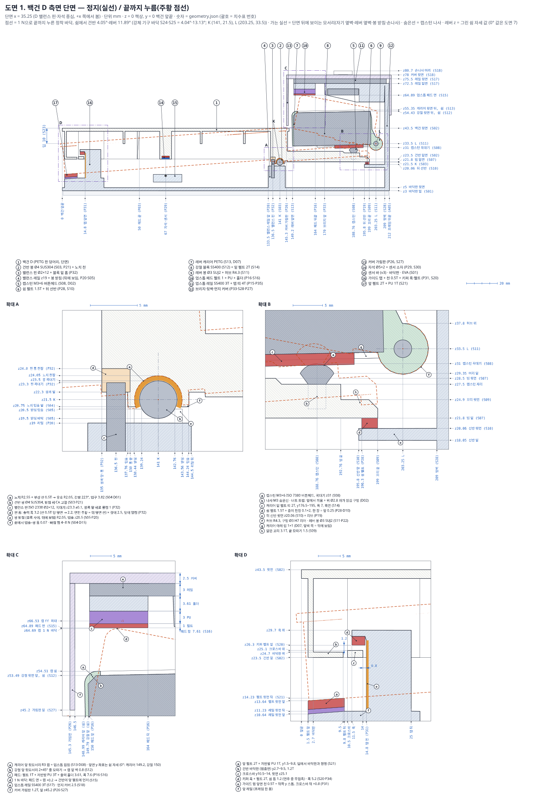</div><figcaption class="small muted">백건 D를 x35.25(밸런스 핀·자석 중심)에서 자른 측면. 실선 = 정지(레버 정착 쉼 각), 주황 점선 = 1 N으로 끝까지 누른 정착 바닥(쉼에서 건반 4.05°, 레버 11.89°; 강체 기구 바닥 S24·S25 4.04°·13.13°). 오른쪽 z·아래 y 좌표는 모두 geometry.json 값이고 괄호는 치수표 번호. 확대 A 봉·스냅 노치·핀, B 캡스턴·쉼·허브, C 업스톱, D 앞 멈춤·키퍼.</figcaption></figure>
<figure class="sheet" id="dwg2"><div class="cap"><span><b>도면 2 · 흑건 측면 단면 (C#)</b></span><a class="mono" href="dwg/d02_black_Csharp_side.svg" target="_blank" rel="noopener">크게 보기 ↗</a></div><div class="dwimg">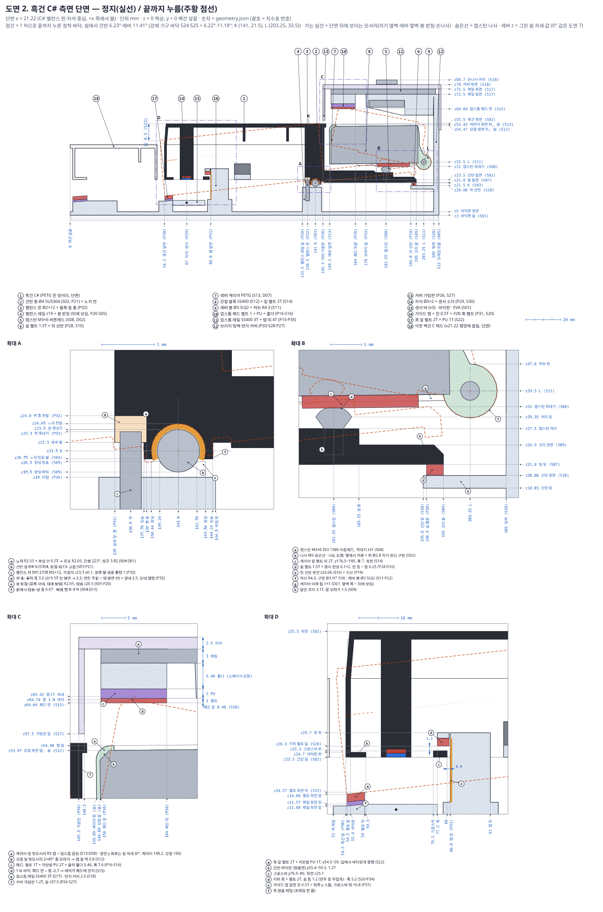</div><figcaption class="small muted">흑건 C#를 x21.22(밸런스 핀·자석 중심)에서 자른 측면. 실선 = 정지(레버 정착 쉼 각), 주황 점선 = 1 N으로 끝까지 누른 정착 바닥(쉼에서 건반 6.23°, 레버 11.41°; 강체 기구 바닥 S24·S25 6.22°·11.18°). 오른쪽 z·아래 y 좌표는 모두 geometry.json 값이고 괄호는 치수표 번호. 확대 A 봉·스냅 노치·핀, B 캡스턴·쉼·허브, C 업스톱, D 앞 멈춤·키퍼. 18 = 단면에 잘린 이웃 백건 C 헤드.</figcaption></figure>
<h3>목표 대비 결과 (3차 모델)</h3>
<div class="tbl "><table><thead><tr><th>항목</th><th>결과 백 / 흑</th><th>목표</th><th>판정</th></tr></thead><tbody><tr><td>다운웨이트 (y13, 흑 앞+10)</td><td>51.9 / 51.0 g</td><td>47~55 g</td><td>통과</td></tr><tr><td>업웨이트</td><td>43.9 / 41.4 g</td><td>20 g 이상</td><td>통과</td></tr><tr><td>립 끝(y0) 다운웨이트 (백)</td><td>47.1 g</td><td>47 g 이상</td><td>통과</td></tr><tr><td>연타, 50 % 복귀에서 재무장</td><td>14.2 / 14.8 Hz</td><td>13.3 Hz 이상</td><td>통과</td></tr><tr><td>연타, 마찰 2배</td><td>13.7 / 13.8 Hz</td><td>13.3 Hz 이상</td><td>통과 (여유 적음)</td></tr><tr><td>끝까지 복귀</td><td>52.4 / 50.0 ms</td><td>60 ms 미만</td><td>통과</td></tr><tr><td>모든 틈 (±0.3 공차 뒤)</td><td>1.00 mm</td><td>1.0 mm 이상</td><td>통과 (3차 검증에서 예외 2곳 지적)</td></tr><tr><td>센서 최소 간격 (2.5 m/s)</td><td>4.56 mm</td><td>3.0 mm 이상</td><td>통과</td></tr><tr><td>쉬는 동안 플라스틱 최대 응력</td><td>1.90 MPa</td><td>2 MPa 미만</td><td>통과</td></tr><tr><td>봉 위 노치 들림</td><td>0.152 mm</td><td>0.2 mm 이하</td><td>통과 (재료값에 달림)</td></tr><tr><td>유령 재타건 (가볍게 누른 채)</td><td>최대 42 %</td><td>재무장선 50 % 미만</td><td>통과 (재료값에 달림)</td></tr><tr><td>유효 질량</td><td>68.9 / 64.7 g</td><td>참고</td><td></td></tr><tr><td>앞/뒤 힘 비 (y90 / y13)</td><td>2.52 (y90에서 131 g)</td><td>참고</td><td>단계 0에서 직접 쳐 보고 판정</td></tr></tbody></table></div>
<p class="small muted">모든 수치는 좌표 모델(model_v4.py)을 돌린 결과입니다. 3차 검증에서 나온 주요 문제 8건은 아직 반영하지 않았습니다.</p>
<h3>뺀 것</h3>
<div class="tbl "><table><thead><tr><th>비교 대상</th><th>뺀 부품</th></tr></thead><tbody><tr><td>그랜드 피아노에서</td><td>해머, 윕펜, 잭, 렙리션 스프링, 백체크, 댐퍼, 레트오프 버튼. 남긴 것은 시소 건반, 캡스턴, 앞 펠트, 무게, 밸런스 핀.</td></tr><tr><td>카시오 / 야마하 GHS에서</td><td>해머-건반 연결 홈(덜걱 소리의 원인), 고무 돔 스위치, 추 밑 스펀지.</td></tr><tr><td>v3에서</td><td>리프 콤, 척추와 척추 레일, 클램프 나사, 세트스크루, 황동 원판, 두 번째 바닥 레일.</td></tr></tbody></table></div>
<h3>선택안 W1-B</h3>
<p>제어 기판을 건반 앞쪽 밑으로 옮기고 시소 축을 y160으로 물리면, 검은 건반 사이(y90)를 누르는 힘이 131 g에서 약 110 g으로 줄어듭니다(앞/뒤 비 2.52 → 약 2.1). 대신 v3에서 끝난 전자부를 다시 설계해야 해서, 단계 0 시편을 쳐 보고 거슬릴 때만 엽니다.</p>
</section><section class="page" id="p-drawings" hidden>
<h2>도면 12장</h2>
<p class="lede">모든 치수는 좌표 모델이 내보낸 geometry.json에서 옮겼습니다. 실선은 쉬는 자세, 주황 점선은 끝까지 누른 자세입니다. "크게 보기"로 원본 SVG를 열면 확대해도 선이 깨지지 않습니다.</p>
<div class="note">2차 감수(1,282개 대조)에서 나온 주요 2건·사소 17건은 고쳤지만, 고친 뒤의 감수는 아직 하지 않았습니다. 이때 고친 값 일부(끝 부속 이음 보스, 흑건 자석 보스, 보조 스프링)는 도면에만 들어가 있어 좌표 모델에 합쳐야 합니다. 3차 검증의 주요 8건을 고치면 좌표가 바뀌므로 도면을 다시 뽑습니다.</div>
<ol class="dtoc"><li><a href="#dwg1">1. 백건 측면 단면 (D)</a></li><li><a href="#dwg2">2. 흑건 측면 단면 (C#)</a></li><li><a href="#dwg3">3. 옥타브 모듈 평면도</a></li><li><a href="#dwg4">4. 모듈 가로 단면 (레버 구역)</a></li><li><a href="#dwg5">5. 백건 부품도</a></li><li><a href="#dwg6">6. 흑건 부품도</a></li><li><a href="#dwg7">7. 레버 캐리어 + 강철 블록 부품도</a></li><li><a href="#dwg8">8. 프레임 부품도</a></li><li><a href="#dwg9">9. 업스톱 레일 + 먼지 커버 + 선택 스프링 자리</a></li><li><a href="#dwg10">10. 끝 부속 (왼쪽 A0·A#0·B0, 오른쪽 C8) 평면</a></li><li><a href="#dwg11">11. 전체 배치 측면</a></li><li><a href="#dwg12">12. 건반 하나 빼기 순서</a></li></ol>
<figure class="sheet" id="dwg1"><div class="cap"><span><b>도면 1 · 백건 측면 단면 (D)</b></span><a class="mono" href="dwg/d01_white_D_side.svg" target="_blank" rel="noopener">크게 보기 ↗</a></div><div class="dwimg"></div><figcaption class="small muted">백건 D를 x35.25(밸런스 핀·자석 중심)에서 자른 측면. 실선 = 정지(레버 정착 쉼 각), 주황 점선 = 1 N으로 끝까지 누른 정착 바닥(쉼에서 건반 4.05°, 레버 11.89°; 강체 기구 바닥 S24·S25 4.04°·13.13°). 오른쪽 z·아래 y 좌표는 모두 geometry.json 값이고 괄호는 치수표 번호. 확대 A 봉·스냅 노치·핀, B 캡스턴·쉼·허브, C 업스톱, D 앞 멈춤·키퍼.</figcaption></figure><figure class="sheet" id="dwg2"><div class="cap"><span><b>도면 2 · 흑건 측면 단면 (C#)</b></span><a class="mono" href="dwg/d02_black_Csharp_side.svg" target="_blank" rel="noopener">크게 보기 ↗</a></div><div class="dwimg"></div><figcaption class="small muted">흑건 C#를 x21.22(밸런스 핀·자석 중심)에서 자른 측면. 실선 = 정지(레버 정착 쉼 각), 주황 점선 = 1 N으로 끝까지 누른 정착 바닥(쉼에서 건반 6.23°, 레버 11.41°; 강체 기구 바닥 S24·S25 6.22°·11.18°). 오른쪽 z·아래 y 좌표는 모두 geometry.json 값이고 괄호는 치수표 번호. 확대 A 봉·스냅 노치·핀, B 캡스턴·쉼·허브, C 업스톱, D 앞 멈춤·키퍼. 18 = 단면에 잘린 이웃 백건 C 헤드.</figcaption></figure><figure class="sheet" id="dwg3"><div class="cap"><span><b>도면 3 · 옥타브 모듈 평면도</b></span><a class="mono" href="dwg/d03_octave_plan.svg" target="_blank" rel="noopener">크게 보기 ↗</a></div><div class="dwimg">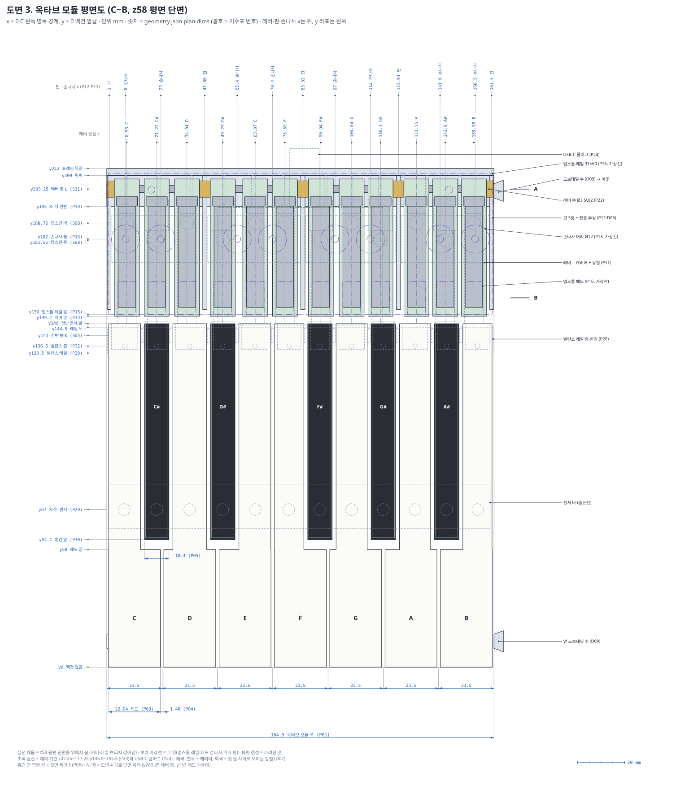</div><figcaption class="small muted">C~B 모듈을 z58(레버 윗면과 브리지 사이)에서 잘라 위에서 본 평면. 건반·레버·핀·뒤 선반은 실선, 업스톱 레일·패드·손나사·위치 핀은 보라 가상선, 밸런스 레일·봉 받침·센서 바·캡스턴·자석·핀은 파란 숨은선, 제어 기판·USB 플러그는 초록 점선. 앞은 피치·헤드 폭·틈, 위는 레버 중심·핀·손나사 x, 왼쪽은 y 좌표. A·B는 도면 4의 가로 단면 자리.</figcaption></figure><figure class="sheet" id="dwg4"><div class="cap"><span><b>도면 4 · 모듈 가로 단면 (레버 구역)</b></span><a class="mono" href="dwg/d04_module_cross_sections.svg" target="_blank" rel="noopener">크게 보기 ↗</a></div><div class="dwimg">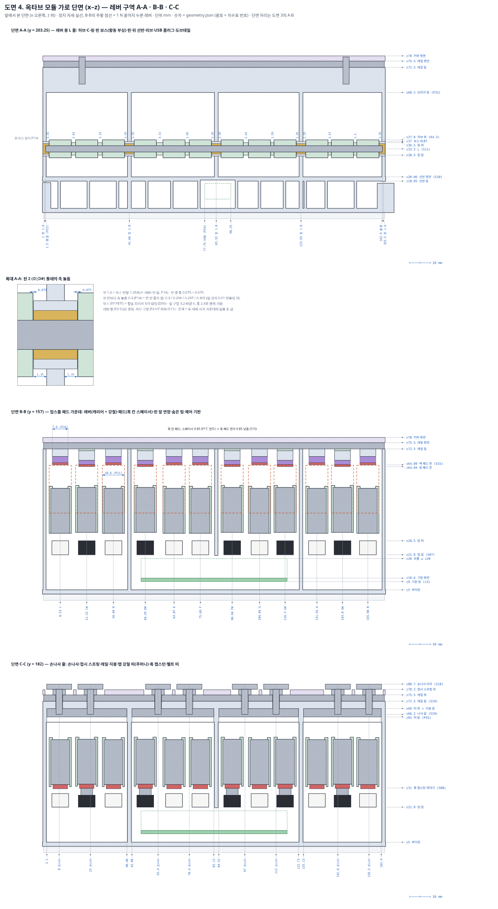</div><figcaption class="small muted">레버 구역 x–z 단면 셋. A-A(y203.25 레버 봉): 허브·C-링(P14 길이)·핀 보스 황동 부싱·핀·뒤 선반·리브·USB 플러그·도브테일, 확대로 핀 둘레 축 놀음. B-B(y157 패드 가운데): 레버 캐리어·강철·패드 층(흑 칸 스페이서 0.85)과 누른 레버(점선). C-C(y182 손나사 줄): 손나사·접시 스프링·레일·지붕·탭 강철 띠 주머니.</figcaption></figure><figure class="sheet" id="dwg5"><div class="cap"><span><b>도면 5 · 백건 부품도</b></span><a class="mono" href="dwg/d05_white_key_part.svg" target="_blank" rel="noopener">크게 보기 ↗</a></div><div class="dwimg">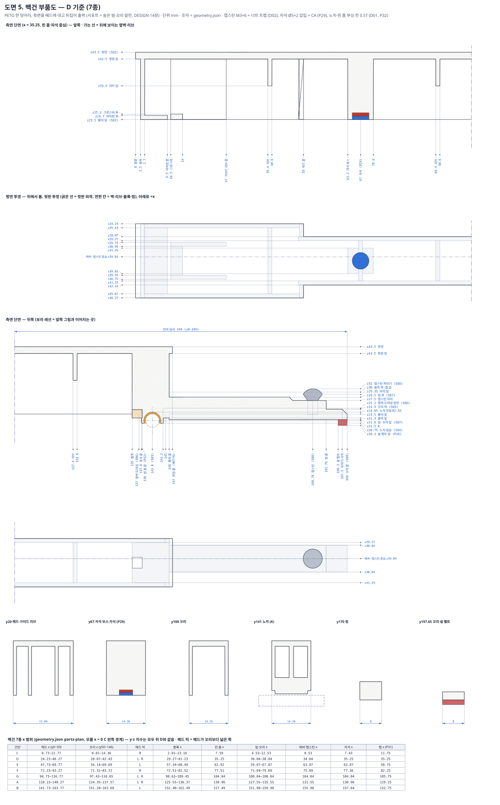</div><figcaption class="small muted">백건 D를 기준으로 한 부품도: 측면 단면(앞·뒤 두 토막, 모든 z·y 좌표), 윗판을 투명하게 본 평면 투영(벽·리브·블록·빔 x), y 위치별 가로 단면 6개, 아래 표에 백건 7종의 x 범위. y·z 치수는 모든 백건에서 같다.</figcaption></figure><figure class="sheet" id="dwg6"><div class="cap"><span><b>도면 6 · 흑건 부품도</b></span><a class="mono" href="dwg/d06_black_key_part.svg" target="_blank" rel="noopener">크게 보기 ↗</a></div><div class="dwimg">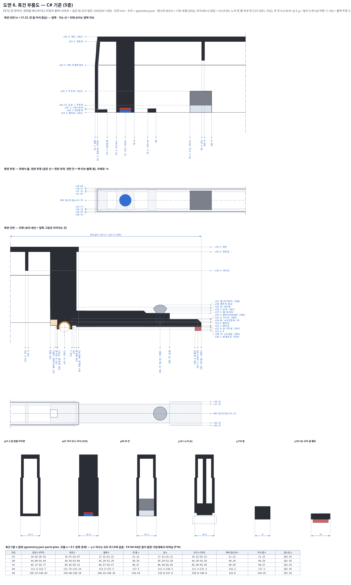</div><figcaption class="small muted">흑건 C#를 기준으로 한 부품도: 측면 단면(앞·뒤 두 토막, 모든 z·y 좌표), 윗판을 투명하게 본 평면 투영(벽·리브·블록·빔 x), y 위치별 가로 단면 6개, 아래 표에 흑건 5종의 x 범위. y·z 치수는 모든 흑건에서 같다. 추 칸은 납 5 g(닫힌 위쪽) + 출력 뚜껑(나머지 깊이).</figcaption></figure><figure class="sheet" id="dwg7"><div class="cap"><span><b>도면 7 · 레버 캐리어 + 강철 블록 부품도</b></span><a class="mono" href="dwg/d07_lever_carrier_steel.svg" target="_blank" rel="noopener">크게 보기 ↗</a></div><div class="dwimg">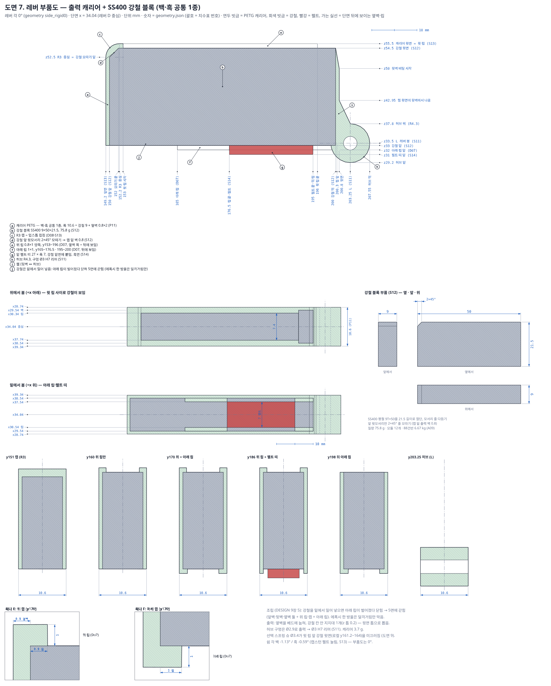</div><figcaption class="small muted">레버(백·흑 공통 1종)를 0°로 놓은 부품도. 위: 캐리어 중심 측면 단면(모든 z·y 좌표, R3 캡·모따기·립·펠트·허브). 가운데: 위·밑에서 본 평면(윗 립 사이 강철 폭, 아래 립·펠트 띠)과 강철 블록 부품(옆·앞·위). 아래: y 위치별 가로 단면 6개와 확대 E·F(위 립 0.8×1, 아래 립 1×1)로 강철이 5면에 갇히는 모양.</figcaption></figure><figure class="sheet" id="dwg8"><div class="cap"><span><b>도면 8 · 프레임 부품도</b></span><a class="mono" href="dwg/d08_frame.svg" target="_blank" rel="noopener">크게 보기 ↗</a></div><div class="dwimg">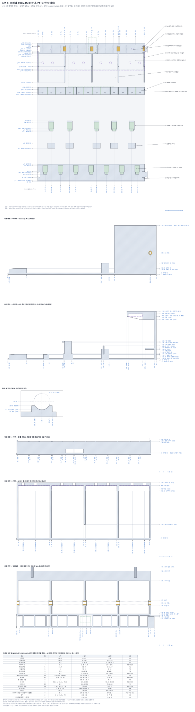</div><figcaption class="small muted">모듈 프레임 한 덩어리. 평면(브리지 밑을 위에서 봄: 앞 레일·탭·키퍼 훅·흑 멈춤 레일·밸런스 레일과 봉 받침·핀·보스·선반·리브·도브테일, 브리지·위치 핀·띠 주머니·지붕 손나사 구멍 Ø3.4는 가상선/숨은선), 측면 단면 둘(핀 2, C# 중심), 봉 받침 확대, 가로 단면 셋(봉 줄 y141, 손나사 줄 y182: 지붕 구멍 8개, 레버 봉 줄 y203.25)과 형상 표.</figcaption></figure><figure class="sheet" id="dwg9"><div class="cap"><span><b>도면 9 · 업스톱 레일 + 먼지 커버 + 선택 스프링 자리</b></span><a class="mono" href="dwg/d09_rail_cover_spring.svg" target="_blank" rel="noopener">크게 보기 ↗</a></div><div class="dwimg">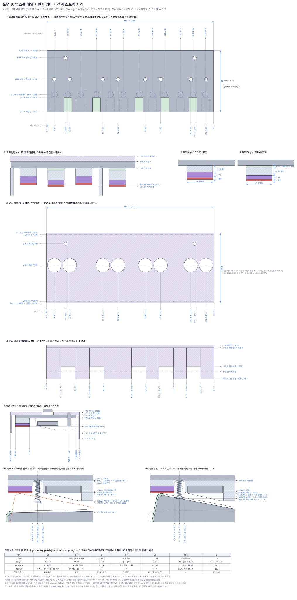</div><figcaption class="small muted">업스톱 레일 SS400 3T×60 평면(손나사 구멍 8·위치 핀 구멍 2·밑면 패드·흑 칸 스페이서·선택 스프링 자리), 패드 가로 단면과 백·흑 패드 쌓기, 먼지 커버 평면·정면(가림판 흑 노치·뒤 스커트), 위치 핀 자리 측면 단면, 선택 보조 스프링(패드와 브리지 사이 y167 고정 축: 자리판·포켓·가이드 핀·슈, 쉼 6a와 1 N 바닥 6b)과 스프링 표.</figcaption></figure><figure class="sheet" id="dwg10"><div class="cap"><span><b>도면 10 · 끝 부속 (왼쪽 A0·A#0·B0, 오른쪽 C8) 평면</b></span><a class="mono" href="dwg/d10_end_parts.svg" target="_blank" rel="noopener">크게 보기 ↗</a></div><div class="dwimg">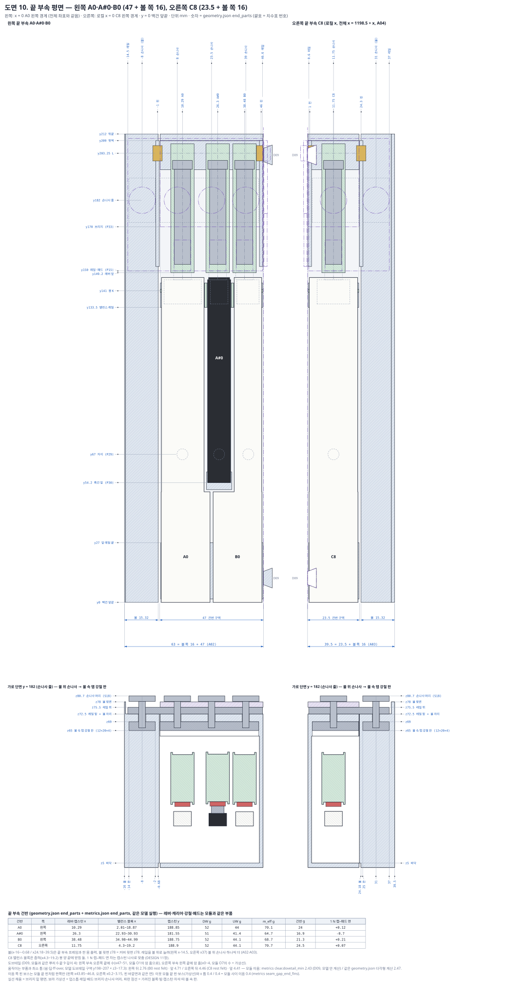</div><figcaption class="small muted">끝 부속 두 개의 평면(브리지 밑 단면을 위에서 봄): 건반·레버(모듈과 같은 캐리어+강철)·핀·보스·밸런스 레일·볼(x-16~-0.68 / 24.18~39.5)·볼 위 손나사, 위는 레버·핀·손나사·레일 끝 x, 아래는 폭. 이음 쪽에 도브테일(D09: 왼쪽 수, 오른쪽 암 홈)과 이웃 모듈 끝 핀·보스(가상선), 움직이는 부품과의 틈은 표 밑 글. 가운데 줄은 손나사 줄 가로 단면(볼 속 탭 강철 판·지붕 구멍), 아래 표는 건반별 레버 x·캡스턴 y·DW/UW.</figcaption></figure><figure class="sheet" id="dwg11"><div class="cap"><span><b>도면 11 · 전체 배치 측면</b></span><a class="mono" href="dwg/d11_overall_layout.svg" target="_blank" rel="noopener">크게 보기 ↗</a></div><div class="dwimg">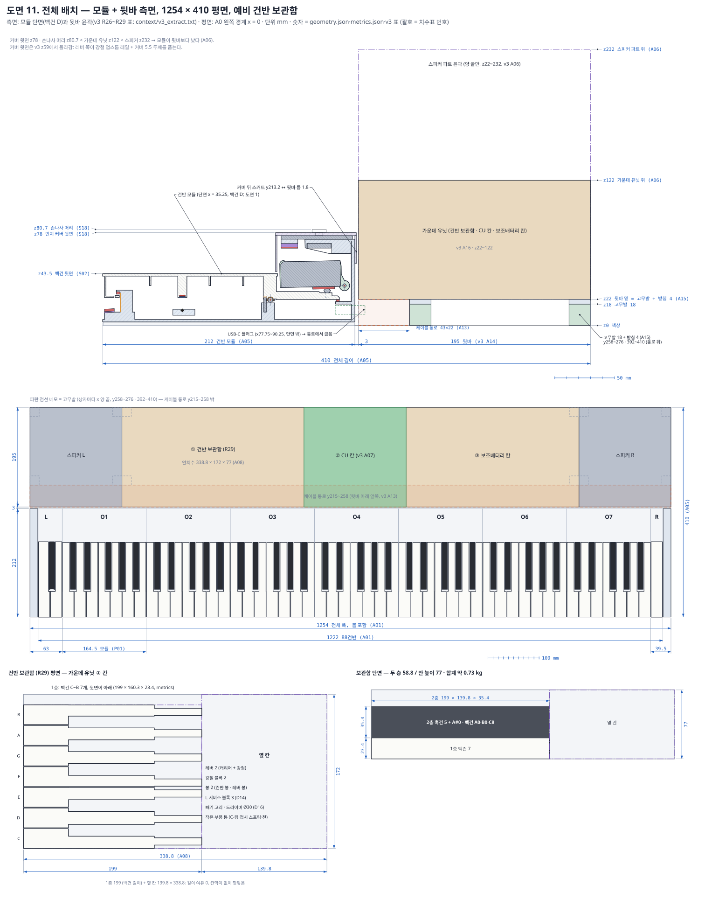</div><figcaption class="small muted">모듈 단면(프레임 212)과 틈 3, 뒷바 195(가운데 유닛 z22~122, 양 끝 스피커 파트 z22~232 윤곽, 아래 케이블 통로)로 전체 깊이 410. 커버 윗면 z78·손나사 머리 z80.7이 뒷바보다 낮음. 가운데는 1254 × 410 전체 평면(끝 부속 + 모듈 7 + 뒷바 칸), 아래는 예비 건반 보관함의 층 배치.</figcaption></figure><figure class="sheet" id="dwg12"><div class="cap"><span><b>도면 12 · 건반 하나 빼기 순서</b></span><a class="mono" href="dwg/d12_key_removal.svg" target="_blank" rel="noopener">크게 보기 ↗</a></div><div class="dwimg">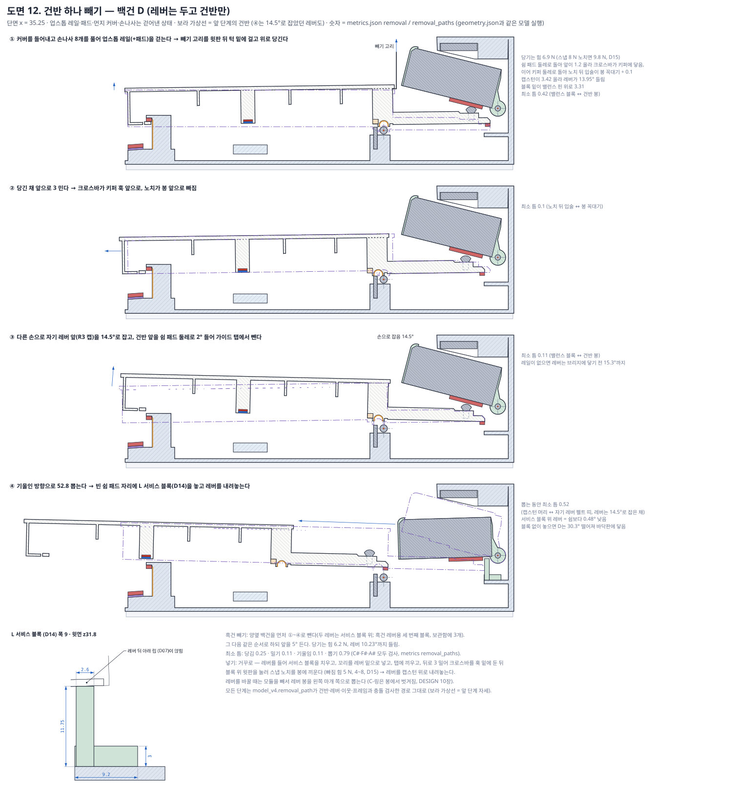</div><figcaption class="small muted">백건 D 하나를 빼는 네 단계(레일을 걷은 상태): ① 고리로 당겨 쉼 패드·키퍼 둘레로 돌려 노치를 봉 위로(레버가 캡스턴에 들림), ② 앞으로 3 밀어 크로스바·노치를 뺌, ③ 레버를 14.5°로 잡고 건반 앞을 2° 들어 탭에서 뺌, ④ 52.8 뽑고 L 서비스 블록 위에 레버를 내려놓음. 각 단계의 최소 틈과 흑건·넣기 순서는 아래 글.</figcaption></figure>
</section><section class="page" id="p-check" hidden>
<h2>검증 기록과 남은 문제</h2>
<p class="lede">설계 모델을 만든 에이전트와 다른 에이전트가, 물리(힘·동역학·강도)와 형상(간섭·조립·출력) 두 관점에서 처음부터 다시 계산해 틀린 곳을 찾았습니다.</p>
<h3>설계 검증</h3>
<div class="tbl "><table><thead><tr><th>검증 회차</th><th class=r>치명</th><th class=r>주요</th><th class=r>사소</th><th>처리</th></tr></thead><tbody><tr><td>1차</td><td class=num>1</td><td class=num>10</td><td class=num>12</td><td>수정 완료</td></tr><tr><td>2차</td><td class=num>1</td><td class=num>10</td><td class=num>11</td><td>수정 완료</td></tr><tr><td>3차</td><td class=num>0</td><td class=num>8</td><td class=num>10</td><td>수정 전 (다음 단계)</td></tr></tbody></table></div>
<p class="small muted">회차마다 기준을 더 엄하게 잡았습니다(세게 치기 2.5 m/s까지, 가볍게 누른 채 유령 재타건, 공차 ±0.3 포함 틈). 그래서 문제 수가 곧바로 줄지는 않았지만, 치명 문제는 3차에서 0건이 됐습니다.</p>
<h3>3차 검증에서 남은 주요 문제 8건</h3>
<div class="tbl "><table><thead><tr><th>관점</th><th>항목</th><th>문제</th><th>고칠 방법</th></tr></thead><tbody><tr><td>형상</td><td>끝 부속 이음부</td><td>왼쪽·오른쪽 끝 부속의 경계 핀 보스가 옆 모듈 핀과 0.95 mm 겹친다.</td><td>경계 핀은 한쪽에만 보스를 둔다. 도면 10에는 이미 반영했고, 좌표 모델에 합치는 일이 남았다.</td></tr><tr><td>형상</td><td>흑건 가이드 폭</td><td>흑건 안쪽 폭 8.0에 탭 7.5 + 천 0.5 × 2 = 8.5가 들어가야 해서 한쪽 0.25 mm 억지 끼움이 된다. 천이 반으로 눌려 마찰이 몇 N 생긴다.</td><td>흑 탭을 6.9로 좁힌다(천 포함 7.9). 단계 0에 끼움 시편을 넣는다.</td></tr><tr><td>형상</td><td>보조 스프링 자리</td><td>선택 보조 스프링의 자리판이 브리지와 1.5 mm 겹치고, 레버가 돌면 스프링 컵이 어긋나 미끄러진다. 마찰이 늘 때 쓰려던 대비책이 지금 도면으로는 만들 수 없다.</td><td>도면 9에서 스프링을 다시 골랐다(선경 0.20). 동역학 계산을 다시 돌리고, 필요하면 레버 봉 토션 스프링으로 바꾼다.</td></tr><tr><td>형상</td><td>제자리 조정</td><td>업스톱 시점을 캡스턴 나사로 맞추게 되어 있지만, 캡스턴이 레버·레일·커버 밑이라 렌치가 들어가지 않는다. 조정 절차가 종이 위에서만 된다.</td><td>업스톱 시점은 패드 밑 0.1 mm 심(레일만 들면 닿음)으로 맞추고, 캡스턴 높이는 건반을 넣기 전에 출력 높이 게이지로 한 번 맞춘다.</td></tr><tr><td>형상</td><td>밸런스 핀 옆 틈</td><td>3차에서 바꾼 계단 블록의 PETG 면이 강철 밸런스 핀과 0.19~0.26 mm까지 붙는다. 두 스윕 모두 이 쌍을 빼고 검사했다.</td><td>핀을 앞으로 1.2 mm(y135.3) 옮기고 블록 앞·홈·레일 앞을 함께 옮긴다.</td></tr><tr><td>형상</td><td>치수표 오기</td><td>치수표 D11의 업스톱 패드 반발 기준이 2차 값(e ≤ 0.12)으로 남아 있다. 3차 설계는 e ≤ 0.07이 합격선이라, 이대로면 불합격 패드를 받아들이게 된다.</td><td>D11을 &quot;패드 실효 e ≤ 0.07&quot;로 고치고 치수표를 다시 뽑는다.</td></tr><tr><td>물리</td><td>업스톱 패드 높이</td><td>패드 면 높이를 건반이 아직 튀고 있는 순간(레버 각속도 0.58 rad/s)의 값으로 정했다. 실제로는 백건 레버가 건반보다 약 0.7 mm 먼저 패드에 닿는다.</td><td>정적 평형에서 다시 푼다(백 패드 0.91 mm 얇게, 흑 0.23 mm 두껍게). 조정 절차도 같이 고친다.</td></tr><tr><td>물리</td><td>스냅 노치 판정</td><td>&quot;빠짐 힘 4~8 N&quot; 판정이 모델 자신의 입술 법칙과 맞지 않는다. 그 법칙으로는 정적 빠짐 힘이 약 2.0 N이다. 건반을 붙잡는 것은 스냅보다 속도에 따른 감쇠력이다.</td><td>빠짐 들림 0.80 mm 대비 여유로 판정하거나, 단계 0의 힘-들림 곡선으로 법칙을 보정한다.</td></tr></tbody></table></div>
<p class="small muted">사소한 문제 10건(펠트 끝 틈 0.58 mm, 커버 가림판 틈, 보관함 여유 0 mm, 건반 빼기에 드라이버 필요 등)도 같이 고칩니다.</p>
<h3>도면 감수</h3>
<div class="tbl "><table><thead><tr><th>감수</th><th class=r>대조한 치수</th><th class=r>주요</th><th class=r>사소</th><th>처리</th></tr></thead><tbody><tr><td>1차</td><td class=num>1,407</td><td class=num>5</td><td class=num>18</td><td>수정 완료</td></tr><tr><td>2차</td><td class=num>1,282</td><td class=num>2</td><td class=num>17</td><td>수정 완료, 재감수 전</td></tr></tbody></table></div>
<h3>같이 검토할 단순화 후보</h3>
<div class="tbl "><table><thead><tr><th>후보</th><th>지금</th><th>검토 내용</th></tr></thead><tbody><tr><td>업스톱 레일 고정</td><td>손나사 8개 + 접시 스프링 72장 + 탭 강철 띠 4개</td><td>가장 센 경우(한 건반 2.5 m/s)가 이 예하중을 정했습니다. 기준을 실제 연주 범위로 다시 잡거나, 레일을 관통 볼트로 프레임 밑까지 조이는 방식을 비교합니다.</td></tr><tr><td>흑건 납 추 5 g</td><td>흑건 5개마다 납 + 출력 뚜껑</td><td>흑건이 바닥에서 튀어 노치가 들리는 것을 막으려는 것입니다. 앞 펠트 밑 저반발 PU만으로 충분한지 단계 0에서 봅니다.</td></tr><tr><td>커버 위치 핀 + 자석</td><td>위치 핀 2 + 자석 2</td><td>커버가 기능 부품이 아니므로 단순한 걸쇠로 바꿀 수 있는지 봅니다.</td></tr><tr><td>레버 봉 경화 샤프트</td><td>SUJ2 경화 Ø3, 길이 맞춤 주문</td><td>뭉치 화음 계산에서 나온 요구입니다. 일반 SUS Ø3로 되는 조건을 다시 봅니다.</td></tr></tbody></table></div>
<h3>단계 0 시편 시험 (요약)</h3>
<p>3건반 시편(백 D · 흑 D# · 백 E)으로 먼저 확인할 것들입니다. 가장 먼저 할 시험은 업스톱 패드의 반발(실효 e ≤ 0.07)입니다. 이 값이 넘으면 가볍게 누른 채 유령 음이 나는 것을 펌웨어로도 거를 수 없습니다.</p>
<div class="tbl "><table><thead><tr><th class=r>#</th><th>시험</th><th>합격 기준</th></tr></thead><tbody><tr><td class=num>1</td><td>업스톱 패드 반발</td><td>실효 e ≤ 0.07</td></tr><tr><td class=num>2</td><td>흑 패드 강성</td><td>K ≥ 25 N/mm^1.5</td></tr><tr><td class=num>3</td><td>앞 펠트 반발</td><td>e ≤ 0.22</td></tr><tr><td class=num>4</td><td>스냅 노치 빠짐 힘</td><td>4~8 N (판정 방식 재검토 중)</td></tr><tr><td class=num>5</td><td>다운·업웨이트</td><td>DW 47~55 g, UW ≥ 20 g</td></tr><tr><td class=num>6</td><td>마찰</td><td>백 ≤ 8.0 g</td></tr><tr><td class=num>7</td><td>복귀 시간 (240 fps 영상)</td><td>50 % ≤ 37.6 ms, 끝까지 ≤ 60 ms</td></tr><tr><td class=num>8</td><td>노치 들림</td><td>≤ 0.2 mm, 딸깍 소리 없음</td></tr><tr><td class=num>9</td><td>유령 재타건</td><td>재무장선 50 % 미만</td></tr><tr><td class=num>10</td><td>레일 예하중</td><td>24 h 뒤 422 N 이상</td></tr><tr><td class=num>11</td><td>피로 (10^6회)</td><td>균열 없음</td></tr><tr><td class=num>12</td><td>60 °C 2시간</td><td>높이 변화 ≤ 0.2 mm</td></tr><tr><td class=num>13</td><td>느낌 (직접 쳐 봄)</td><td>y90 131 g 받아들일 만한지</td></tr><tr><td class=num>14</td><td>90° 세우기</td><td>건반 제자리, 커버 안 떨어짐</td></tr></tbody></table></div>
</section><section class="page" id="p-parts" hidden>
<h2>부품과 비용</h2>
<p class="lede">구매처 조사는 초기 사양(심사 직후 W1+)으로 했습니다. 3차 설계에서 레일, 레버 봉, 고정 방식이 바뀌어서, 아래 카드에 "그대로 / 변경 / 보류"를 표시했습니다. 새로 생긴 부품은 아직 판매처를 확인하지 않은 추정가입니다.</p>
<div class="kfs">
<div class="kf"><b>+130,400원</b><span>3차 설계 기본 구성 변화 (추정)</span></div>
<div class="kf"><b>713,619원</b><span>새 기본 구성 합계 (한도 1,000,000원)</span></div>
<div class="kf"><b>+58,815원</b><span>초기 사양, 판매처 확인가 기준</span></div>
<div class="kf"><b>+57,200원</b><span>선택: 평철 88조각 절단·모따기 외주</span></div>
</div>
<h3>판매처를 확인한 부품 (초기 사양)</h3>
<div class="parts"><article class="part"><div class="ph">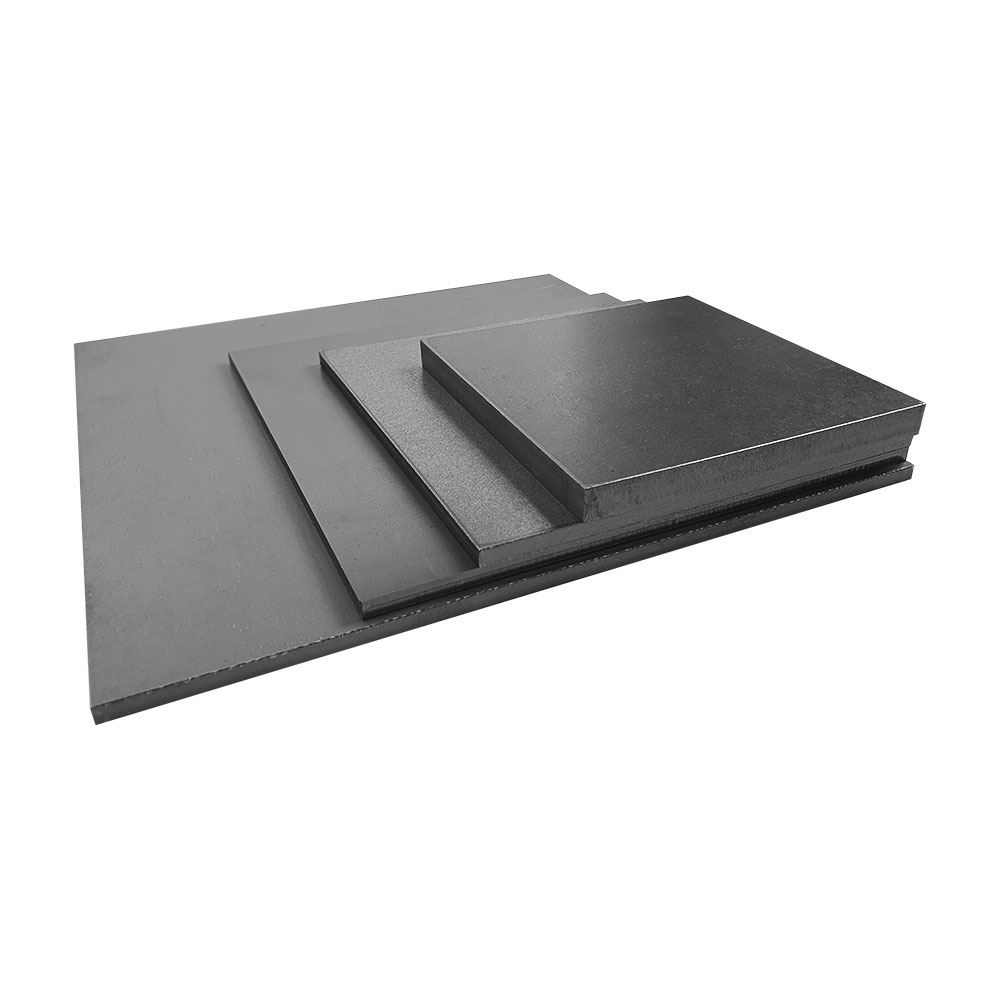<span class="qty">× 2</span><span class="st-ok">그대로</span></div>
<div class="pb"><div class="cat">기본 · B01</div><h4>SS275(구 SS400) 9T 철판 띠 50×1100 — 무게 블록 소재</h4>
<p class="role">무게 레버의 강철 블록 88개 + 예비 4개(보관함 레버 2 + 단계 0/무게 선별 여분 2)를 잘라 낼 소재</p>
<details class="spec"><summary>세부 스펙</summary><table><tr><td>규격</td><td>9T × 50 × 1100 mm, SS275 레이저 재단(1 mm 단위). 1개 3.89 kg. 21.5 mm 간격으로 직접 잘라 블록 9×50×21.5(75.9 g) 92개(띠 1개당 47~48개)</td></tr><tr><td>판매처</td><td>올스틸샵 (allsteelshop.com, (주)올스틸)</td></tr><tr><td>메모</td><td>9/27 상품 페이지 계산기에서 50×1100 개당 18,720원, 2개 37,440원, 배송비 3,500원(0~10 kg), 9/29(화) 발송을 확인했다. SS275는 2018년 KS 개정 전 이름이 SS400인 같은 강재(밀도 7.85)다. 배송비 3,500원은 B02 레일 띠와 함께 한 번만 붙는다고 보았다(합계 8.4 kg). 합배송 여부는 결제 화면에서 다시 확인한다. 2.2 m 한 장(34,200원)이 3,240원 더 싸지만 택배 길이 제한에 걸릴 수 있어 1.1 m 두 장으로 했다. 자르는 방법과 시간은 notes.md §2에 있다.</td></tr></table></details>
<div class="price"><span>올스틸샵</span><b>40,940원</b></div><div class="links"><a href="https://www.allsteelshop.com/product/squareplate/9t" target="_blank" rel="noopener">판매 페이지 ↗</a></div></div></article><article class="part"><div class="ph"><span class="qty">× 1</span><span class="st-chg">변경: 3T×60 레일로</span></div>
<div class="pb"><div class="cat">기본 · B02</div><h4>SS275 3T 철판 띠 19×1300 — 업스톱 레일 소재</h4>
<p class="role">강철 업스톱 레일(밑면 2T 펠트, 흑 칸 1.8 mm 패드). M3 손나사 4개로 핀 보스에 고정한다</p>
<details class="spec"><summary>세부 스펙</summary><table><tr><td>규격</td><td>3T × 19 × 1300 mm, SS275 또는 GS400. 직접 잘라 모듈용 163 mm 7개 + 왼쪽 끝 부속 46 mm + 오른쪽 끝 부속 39 mm(끝 부속 길이는 상세 설계 값으로 바꿀 수 있음)</td></tr><tr><td>판매처</td><td>올스틸샵 (allsteelshop.com)</td></tr><tr><td>메모</td><td>9/27 계산기에서 19×1300 개당 4,300원을 확인했다. 배송비는 B01과 합배송으로 보았다. 3×19 단면은 쇠톱으로 한 번에 약 30초면 잘린다(8컷). 레일에 구멍이 필요하면 Ø3.4 드릴 작업이 더 생긴다. 손나사 머리나 손잡이가 레일 가장자리를 누르는 방식이면 구멍을 뚫지 않아도 된다(notes.md §4).</td></tr></table></details>
<div class="price"><span>올스틸샵</span><b>4,300원</b></div><div class="links"><a href="https://www.allsteelshop.com/product/squareplate/3t" target="_blank" rel="noopener">판매 페이지 ↗</a></div></div></article><article class="part"><div class="ph">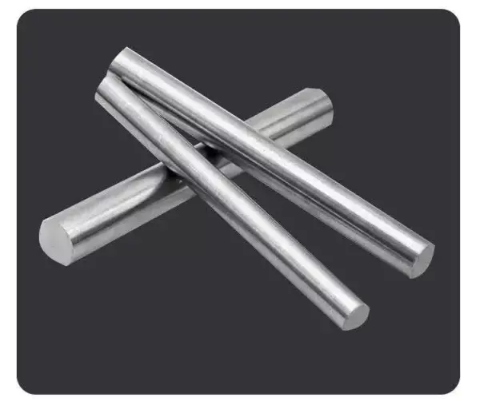<span class="qty">× 2</span><span class="st-ok">그대로 (길이 161.4)</span></div>
<div class="pb"><div class="cat">기본 · B03</div><h4>SUS304 환봉 Ø4 × 1 m — 건반 밸런스 봉</h4>
<p class="role">건반 시소 피벗(y141, z21.5). 밸런스 레일 새들 위에 눕히고 노치 R2.55 + 0.5T 라이닝이 얹힌다</p>
<details class="spec"><summary>세부 스펙</summary><table><tr><td>규격</td><td>SUS304 Ø4 × 1000 mm. 직접 잘라 163.5 mm 8개(모듈 7 + 예비 1) + 끝 부속 46 / 38.5 mm</td></tr><tr><td>판매처</td><td>11번가 요기가최저가 (상품 8661208614)</td></tr><tr><td>메모</td><td>옵션 API 기준으로 &quot;스텐레스 환봉 1M / 4MM&quot; 1,000 + 1,000 = 2,000원, 재고 20개, 배송비 4,000원이다. B04와 같은 판매자라 배송비는 한 번만 낸다. 자르는 계획: 1번 봉 = 163.5 × 5 + 46 + 38.5, 2번 봉 = 163.5 × 3(모듈 2 + 예비 1). 인발봉이라 1 m 전체가 조금 휠 수 있지만 163.5로 자르면 문제없다.</td></tr></table></details>
<div class="price"><span>11번가 요기가최저가</span><b>8,000원</b></div><div class="links"><a href="https://www.11st.co.kr/products/8661208614" target="_blank" rel="noopener">판매 페이지 ↗</a></div></div></article><article class="part"><div class="ph"><span class="qty">× 2</span><span class="st-chg">변경: SUJ2 경화 샤프트로</span></div>
<div class="pb"><div class="cat">기본 · B04</div><h4>SUS304 환봉 Ø3 × 1 m — 레버 봉</h4>
<p class="role">무게 레버 피벗(y203.5, z33.5). 핀 4장과 레버 허브 Ø3.1(리밍) 구멍을 지난다</p>
<details class="spec"><summary>세부 스펙</summary><table><tr><td>규격</td><td>SUS304 Ø3 × 1000 mm. 직접 잘라 163.5 mm 8개(모듈 7 + 예비 1) + 끝 부속 46 / 38.5 mm</td></tr><tr><td>판매처</td><td>11번가 요기가최저가 (상품 8661208614)</td></tr><tr><td>메모</td><td>옵션 API 기준으로 &quot;3MM&quot; 1,000 + 500 = 1,500원, 재고 20개다. 배송비는 B03 줄에 넣었다.</td></tr></table></details>
<div class="price"><span>11번가 요기가최저가</span><b>3,000원</b></div><div class="links"><a href="https://www.11st.co.kr/products/8661208614" target="_blank" rel="noopener">판매 페이지 ↗</a></div></div></article><article class="part"><div class="ph">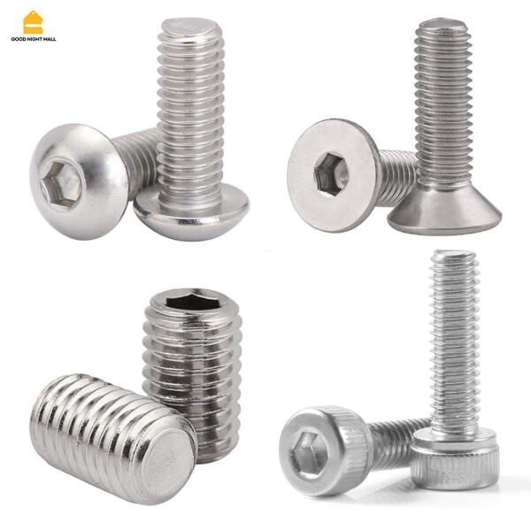<span class="qty">× 96</span><span class="st-chg">변경: M3×6</span></div>
<div class="pb"><div class="cat">기본 · B05</div><h4>SUS304 둥근머리(버튼) 렌치볼트 M3×8 — 캡스턴</h4>
<p class="role">건반 꼬리의 강철 캡스턴(백 y188.3, 흑 y180.6, 머리 윗면 z31). 너트 트랩에 끼우고 반 바퀴(0.25 mm)로 건반별 DW 약 1.3 g을 맞춘다</p>
<details class="spec"><summary>세부 스펙</summary><table><tr><td>규격</td><td>ISO 7380 계열 M3×8, 머리 Ø5.7 × 1.65, 2 mm 육각. 88 + 예비 8</td></tr><tr><td>판매처</td><td>11번가 굿나잇몰 (상품 4236198413, 옵션 둥근머리 / M3 / 8mm)</td></tr><tr><td>메모</td><td>옵션 API 기준으로 기본 20원 + 옵션 20원 = 40원, 재고 7,829개다. 배송비 3,500원은 원래 L32(M3×40) 줄에 있던 굿나잇몰 묶음배송비를 옮겨 온 것이다. L32가 빠져도 L34·L35·L36·L47·L49·T11은 굿나잇몰에서 계속 산다. 빔 두께 7 mm(z21.5~28.5)에 머리 밑면이 z29.35이므로 ×8이면 너트에 모두 물리고 조정 범위 ±1 mm에서 끝이 빔 밑면에서 1 mm 이하로만 나온다.</td></tr></table></details>
<div class="price"><span>11번가 굿나잇몰</span><b>7,340원</b></div><div class="links"><a href="https://www.11st.co.kr/products/4236198413" target="_blank" rel="noopener">판매 페이지 ↗</a></div></div></article><article class="part"><div class="ph"><span class="qty">× 36</span><span class="st-chg">변경: DIN 653 손나사 + 접시 스프링</span></div>
<div class="pb"><div class="cat">기본 · B06</div><h4>SUS304 유두 렌치볼트 M3×12 + 출력 널링 손잡이 — 손나사</h4>
<p class="role">강철 업스톱 레일을 핀 보스(3 mm 이상, 너트 트랩)에 공구 없이 고정한다(모듈당 4)</p>
<details class="spec"><summary>세부 스펙</summary><table><tr><td>규격</td><td>M3×12 소켓 캡(머리 Ø5.5×3). 머리에 PETG 널링 손잡이(Ø12)를 끼우고 CA로 고정한다. 모듈 4 × 7 + 끝 부속 2 × 2 = 32 + 예비 4</td></tr><tr><td>판매처</td><td>11번가 굿나잇몰 (상품 4236198413, 옵션 유두 / M3 / 12mm)</td></tr><tr><td>메모</td><td>옵션 API 기준으로 20 + 40 = 60원, 재고 9,204개다. 국내 재고로 산 M3 금속 손나사는 11번가 해외직구뿐이었고 2개에 1만 원 이상이었다. 그래서 굿나잇몰 소켓볼트에 출력 손잡이를 씌우는 방식을 기본으로 했다. 길이 12 = 레일 3 + 보스 3~5 + 너트 2.4 + 여유. 보스 높이가 정해지면 다시 맞춘다.</td></tr></table></details>
<div class="price"><span>11번가 굿나잇몰</span><b>2,160원</b></div><div class="links"><a href="https://www.11st.co.kr/products/4236198413" target="_blank" rel="noopener">판매 페이지 ↗</a></div></div></article><article class="part"><div class="ph">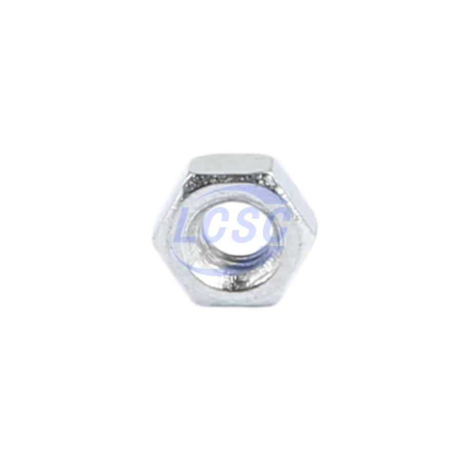<span class="qty">× 136</span><span class="st-ok">그대로</span></div>
<div class="pb"><div class="cat">기본 · B07</div><h4>M3 육각너트(강철) — L31 대체 수량</h4>
<p class="role">건반 빔의 캡스턴 너트 트랩, 핀 보스의 손나사 너트 트랩, 스피커 브래킷</p>
<details class="spec"><summary>세부 스펙</summary><table><tr><td>규격</td><td>XHHD M3 육각너트, 대변 5.5 × 두께 2.4. 캡스턴 96 + 손나사 36 + 스피커 브래킷 4(v3 그대로) = 136</td></tr><tr><td>판매처</td><td>아이씨뱅큐 (P015976209, LCSC 해외 재고)</td></tr><tr><td>메모</td><td>페이지에서 개당 10원(VAT 별도), 11원(VAT 포함), 최소 1개, 해외 재고, 배송 1주 이내를 확인했다. v3 L31은 75개(레일 클램프·세트스크루용 56 + 끝 부속 7 + 스피커 4 + 예비 8)였다. W1+에서는 클램프·세트스크루용 63개가 빠지고 캡스턴·손나사용이 새로 생긴다. 아이씨뱅큐 합배송이라 배송비는 추가되지 않는다.</td></tr></table></details>
<div class="price"><span>아이씨뱅큐</span><b>1,496원</b></div><div class="links"><a href="https://www.icbanq.com/P015976209" target="_blank" rel="noopener">판매 페이지 ↗</a></div></div></article><article class="part"><div class="ph"><span class="qty">× 20</span><span class="st-ok">그대로</span></div>
<div class="pb"><div class="cat">기본 · B08</div><h4>스텐 와셔 M4×9×0.5T — L36 감량</h4>
<p class="role">뒷바 고무발 고정 피스 와셔(R26, v3 그대로)</p>
<details class="spec"><summary>세부 스펙</summary><table><tr><td>규격</td><td>SUS 평와셔 M4×9×0.5T. 고무발 피스 14 + 예비 6 = 20(클램프 나사용 32개는 빠짐)</td></tr><tr><td>판매처</td><td>11번가 굿나잇몰 (상품 4236198413, 추가구성품)</td></tr><tr><td>메모</td><td>추가구성품 &quot;스텐 와셔 M4x9x0.5T&quot; 10원, 재고 9,819개로 확인했다. v3 L36은 60개였다.</td></tr></table></details>
<div class="price"><span>11번가 굿나잇몰</span><b>200원</b></div><div class="links"><a href="https://www.11st.co.kr/products/4236198413" target="_blank" rel="noopener">판매 페이지 ↗</a></div></div></article><article class="part"><div class="ph">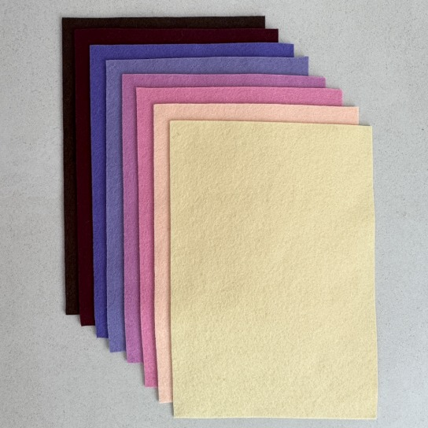<span class="qty">× 1</span><span class="st-ok">그대로</span></div>
<div class="pb"><div class="cat">기본 · B09</div><h4>100% 메리노 울 펠트지 2 mm 20×30 cm — 레버 밑·레일 밑 펠트</h4>
<p class="role">캡스턴이 닿는 레버 밑 2T 펠트(9×19.5, 92장), 업스톱 레일 밑 2T 펠트(19×163 7장 + 끝 부속 2장), 흑 칸 패드 재료</p>
<details class="spec"><summary>세부 스펙</summary><table><tr><td>규격</td><td>100% 울 2 mm, 20×30 cm 1장(색 35 블랙 또는 33 화이트). 20 mm 띠 10줄 → 레일 163×19 최대 10장 + 레버 패드 9×19.5 최대 140장</td></tr><tr><td>판매처</td><td>스튜디오분트 (studiobunt.com, product_no=4117)</td></tr><tr><td>메모</td><td>페이지에서 13,800원, &quot;20*30cm, 100% wool&quot;, 41색 중 너트·베이비핑크·딥그레이멜란지·오트밀·비리디언만 재고 0인 것을 확인했다. v3 L39(DHG 3T)와 같은 가게라 배송비 3,000원은 L39 줄에 이미 들어 있다. 공예용 메리노 펠트라 피아노용 프레스 펠트보다 밀도가 낮다. 단계 0 낙하 시험의 K·e로 확인한다.</td></tr></table></details>
<div class="price"><span>스튜디오분트</span><b>13,800원</b></div><div class="links"><a href="https://studiobunt.com/product/detail.html?product_no=4117" target="_blank" rel="noopener">판매 페이지 ↗</a></div></div></article><article class="part"><div class="ph"><span class="qty">× 92</span><span class="st-ok">그대로</span></div>
<div class="pb"><div class="cat">기본 · B10</div><h4>꼬리 멈춤 펠트 1.5T — B09 자투리로 대체</h4>
<p class="role">건반 쉼 위치를 정하는 꼬리 끝(y196~199) 밑 펠트</p>
<details class="spec"><summary>세부 스펙</summary><table><tr><td>규격</td><td>8×3 mm × 92장. B09 2T 자투리를 쓰고, 뒤 선반 윗면을 z20 → z19.5로 0.5 mm 내려 쉼 높이를 맞춘다(상세 설계에 전달)</td></tr><tr><td>판매처</td><td>(구매 없음, B09에서 잘라 씀)</td></tr><tr><td>메모</td><td>국내에서 1.5 mm 울 펠트를 소량으로 파는 곳을 찾지 못했다(울 펠트는 1 / 2 / 3 / 5 mm 규격). 1.5T를 꼭 써야 하면 대안처럼 쌓는다. 쉼 높이는 펠트 두께 + 선반 높이로 정해지므로 2T를 쓰고 선반만 0.5 mm 내리는 편이 간단하다.</td></tr></table></details>
<div class="price"><span>(구매 없음, B09에서 잘라 씀)</span><b>0원</b></div><div class="links"></div></div></article><article class="part"><div class="ph">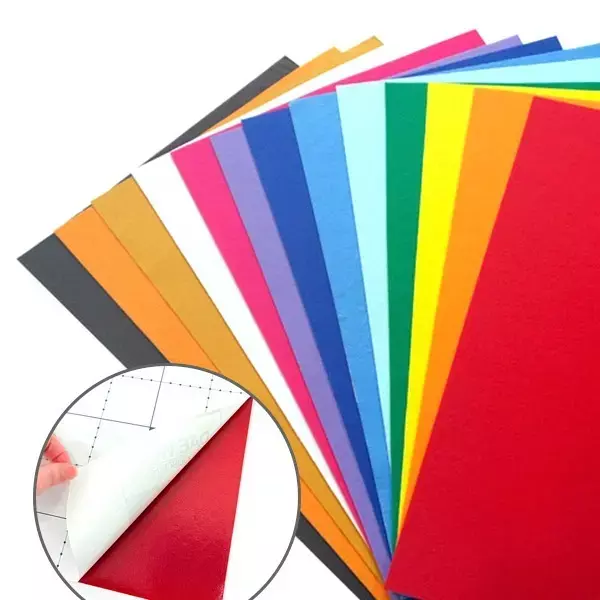<span class="qty">× 92</span><span class="st-ok">그대로</span></div>
<div class="pb"><div class="cat">기본 · B11</div><h4>노치 라이닝 0.5T — v3 L40 칼라펠트지 재사용</h4>
<p class="role">건반의 열린 노치(R2.55)를 Ø4 봉 위에 앉힐 때 되앉는 딸깍 소리와 마모를 받는다</p>
<details class="spec"><summary>세부 스펙</summary><table><tr><td>규격</td><td>대원 칼라펠트지 0.5 mm 접착(v3 L40, 30×45 cm 2장). 노치 R2.55용 12×8 mm 조각 92장(약 90 cm²)</td></tr><tr><td>판매처</td><td>(v3 L40 재사용, 추가 구매 없음)</td></tr><tr><td>메모</td><td>v3에서 L40의 한 가지 용도였던 뒤 스톱 2겹 띠(y138~144)가 W1+에서 사라지므로 2장(2,700 cm²)에서 가이드 탭 부싱을 빼고도 충분히 남는다. 폴리에스터 공예 펠트라 마모 수명은 단계 0에서 확인한다.</td></tr></table></details>
<div class="price"><span>(v3 L40 재사용, 추가 구매 없음)</span><b>0원</b></div><div class="links"><a href="https://www.11st.co.kr/products/8517880969" target="_blank" rel="noopener">판매 페이지 ↗</a></div></div></article><article class="part"><div class="ph">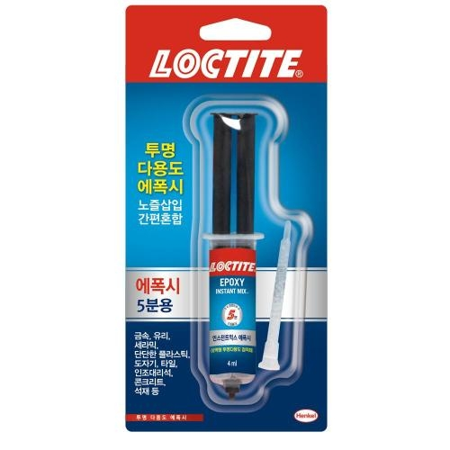<span class="qty">× 1</span><span class="st-ok">그대로</span></div>
<div class="pb"><div class="cat">소모품 · C01</div><h4>LOCTITE 5분 에폭시 14 ml</h4>
<p class="role">강철 블록을 캐리어에 넣은 뒤 떨림만 막는 점 접착(블록은 스냅 립으로 가둔다)</p>
<details class="spec"><summary>세부 스펙</summary><table><tr><td>규격</td><td>2액형 5분 경화 에폭시 14 ml(1365868)</td></tr><tr><td>판매처</td><td>엘레파츠 (goods no=16596617)</td></tr><tr><td>메모</td><td>페이지에서 3,872.73원(VAT 별도), 4,260원(VAT 포함), 1.5일 발송을 확인했다. 엘레파츠 합배송(공급가 6만 원 이상 무료)이라 배송비는 0원이다. 블록 1개에 약 0.1 ml라 14 ml면 충분하다.</td></tr></table></details>
<div class="price"><span>엘레파츠</span><b>4,260원</b></div><div class="links"><a href="https://www.eleparts.co.kr/goods/view?no=16596617" target="_blank" rel="noopener">판매 페이지 ↗</a></div></div></article><article class="part"><div class="ph">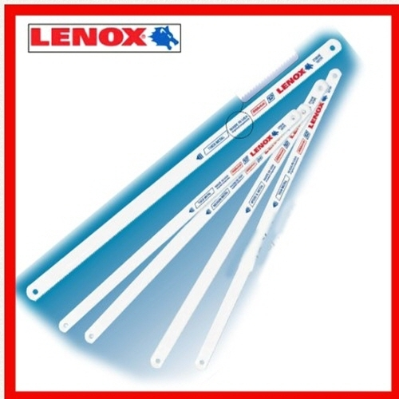<span class="qty">× 3</span><span class="st-ok">그대로</span></div>
<div class="pb"><div class="cat">소모품 · C02</div><h4>LENOX 쇠톱날 12인치</h4>
<p class="role">블록 92컷 + 레일 8컷 + 봉 약 20컷. 날 하나로 9×50 약 30~40컷을 본다</p>
<details class="spec"><summary>세부 스펙</summary><table><tr><td>규격</td><td>12&quot;(300 mm) 쇠톱날 T2355. TPI 표기 없음(철 9 mm에는 18~24 TPI 바이메탈이 맞음)</td></tr><tr><td>판매처</td><td>엘레파츠 (goods no=4101973)</td></tr><tr><td>메모</td><td>페이지에서 2,200원(VAT 포함), 3.5일 발송, 미국산을 확인했다. TPI가 적혀 있지 않으니 주문할 때 18 또는 24 TPI인지 문의한다.</td></tr></table></details>
<div class="price"><span>엘레파츠</span><b>6,600원</b></div><div class="links"><a href="https://www.eleparts.co.kr/goods/view?no=4101973" target="_blank" rel="noopener">판매 페이지 ↗</a></div></div></article><article class="part"><div class="ph">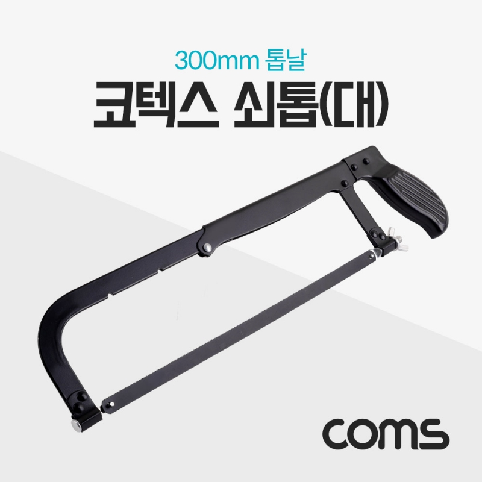<span class="qty">× 1</span><span class="st-ok">그대로</span></div>
<div class="pb"><div class="cat">공구 · T01</div><h4>코텍스 쇠톱(대) 300 mm K-9301</h4>
<p class="role">평철 띠를 블록으로, 레일 띠와 봉을 길이대로 직접 자른다(외주 대신)</p>
<details class="spec"><summary>세부 스펙</summary><table><tr><td>규격</td><td>프레임 쇠톱, 300 mm 날</td></tr><tr><td>판매처</td><td>엘레파츠 (goods no=9100747, CK6930)</td></tr><tr><td>메모</td><td>페이지에서 6,500원(VAT 포함), 해외 재고, 3.5일 발송을 확인했다. 그라인더와 1 mm 절단석이 있으면 쓰지 않아도 된다.</td></tr></table></details>
<div class="price"><span>엘레파츠</span><b>6,500원</b></div><div class="links"><a href="https://www.eleparts.co.kr/goods/view?no=9100747" target="_blank" rel="noopener">판매 페이지 ↗</a></div></div></article><article class="part"><div class="ph">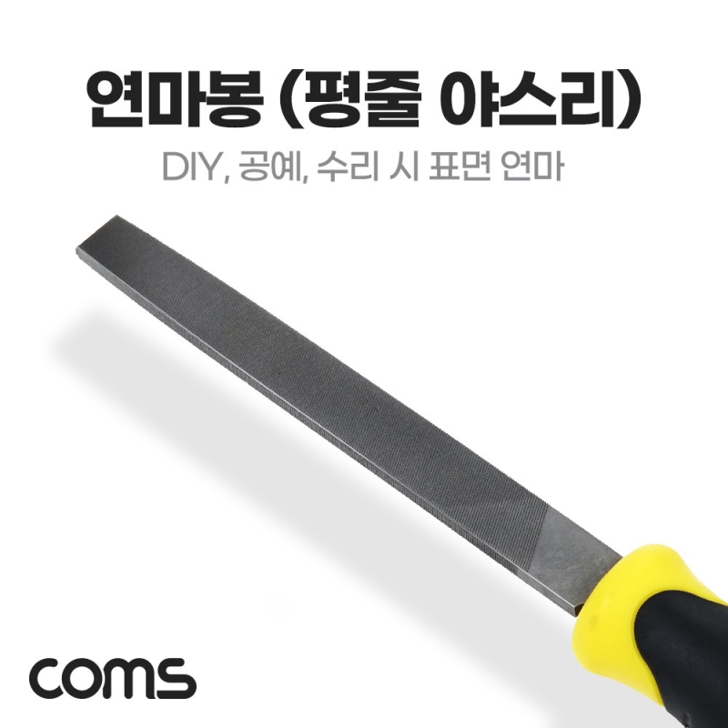<span class="qty">× 1</span><span class="st-ok">그대로</span></div>
<div class="pb"><div class="cat">공구 · T02</div><h4>Coms 평줄(야스리) BD079</h4>
<p class="role">자른 면 버 제거, 블록 앞 윗모서리 R2 둥글림(캡을 씌우지 않을 때), 봉 끝 모따기</p>
<details class="spec"><summary>세부 스펙</summary><table><tr><td>규격</td><td>철공용 평줄</td></tr><tr><td>판매처</td><td>엘레파츠 (goods no=12185326)</td></tr><tr><td>메모</td><td>페이지에서 6,800원(VAT 포함)을 확인했다.</td></tr></table></details>
<div class="price"><span>엘레파츠</span><b>6,800원</b></div><div class="links"><a href="https://www.eleparts.co.kr/goods/view?no=12185326" target="_blank" rel="noopener">판매 페이지 ↗</a></div></div></article><article class="part"><div class="ph">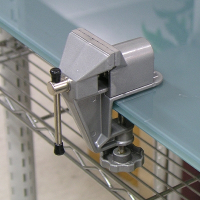<span class="qty">× 1</span><span class="st-ok">그대로</span></div>
<div class="pb"><div class="cat">공구 · T03</div><h4>Prokit PD-374 탁상 바이스(고정 클램프)</h4>
<p class="role">9T 띠를 물리고 92번 톱질한다. 바이스가 있으면 빼도 된다</p>
<details class="spec"><summary>세부 스펙</summary><table><tr><td>규격</td><td>책상 모서리에 조이는 소형 바이스</td></tr><tr><td>판매처</td><td>엘레파츠 (goods no=2923219)</td></tr><tr><td>메모</td><td>페이지에서 20,000원(VAT 포함), 3.5일 발송을 확인했다.</td></tr></table></details>
<div class="price"><span>엘레파츠</span><b>20,000원</b></div><div class="links"><a href="https://www.eleparts.co.kr/goods/view?no=2923219" target="_blank" rel="noopener">판매 페이지 ↗</a></div></div></article><article class="part"><div class="ph"><span class="qty">× 1</span><span class="st-ok">그대로</span></div>
<div class="pb"><div class="cat">공구 · T04</div><h4>육각 렌치 2 mm (T11의 1.5 mm 대체)</h4>
<p class="role">캡스턴 나사 반 바퀴 조정. 레버를 16° 젖히고 위에서 돌린다</p>
<details class="spec"><summary>세부 스펙</summary><table><tr><td>규격</td><td>2.0 mm L렌치(버튼머리 M3용)</td></tr><tr><td>판매처</td><td>11번가 굿나잇몰 (상품 4236198413, 추가구성품)</td></tr><tr><td>메모</td><td>추가구성품 &quot;육각 렌치 2mm&quot; 600원, 재고 9,998개로 확인했다. T11 줄에서 1.5 mm(세트스크루용, 600원)를 빼고 이것을 넣으므로 공구 합계는 변하지 않는다. 2.5 mm는 그대로 쓴다.</td></tr></table></details>
<div class="price"><span>11번가 굿나잇몰</span><b>600원</b></div><div class="links"><a href="https://www.11st.co.kr/products/4236198413" target="_blank" rel="noopener">판매 페이지 ↗</a></div></div></article><article class="part"><div class="ph">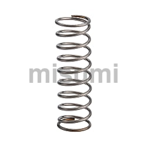<span class="qty">× 96</span><span class="st-hold">보류: 스프링 재설계</span></div>
<div class="pb"><div class="cat">선택 · O01</div><h4>한국미스미 E-GUY6-20 SUS304 압축 스프링 — 보조 스프링(단계 0 결과에 따라)</h4>
<p class="role">W1-S 보조 스프링. 단계 0에서 t40이 37.6 ms를 넘을 때만 끼운다(바닥에서 +12 g, 약 16 Hz)</p>
<details class="spec"><summary>세부 스펙</summary><table><tr><td>규격</td><td>경제형 외경 기준 극경하중: 선경 0.35, 외경 6, 내경 5.3, 자유장 20, k = 0.098 N/mm, 총 10권(유효 약 8), 밀착 3.85, 최대 1.47 N. L0/D 3.3, 스프링 지수 C 16.1</td></tr><tr><td>판매처</td><td>한국미스미 (detail 110310903599, E-GUY6-20)</td></tr><tr><td>메모</td><td>페이지에서 1~299개 540원(VAT 별도), 594원(VAT 포함), 최대 835개, 참고 출하일 9/29를 확인했다. 설계 사양(d0.35 / OD6 / 유효 약 11권, k ≈ 0.065 N/mm)보다 권수가 적어 k가 1.5배다. 예압과 자리 깊이를 k 0.098로 다시 계산해야 한다. 미스미 배송비는 검색 결과상 무료였고 결제 화면에서 확인한다.</td></tr></table></details>
<div class="price"><span>한국미스미</span><b>57,024원</b></div><div class="links"><a href="https://kr.misumi-ec.com/vona2/detail/110310903599/?HissuCode=E-GUY6-20" target="_blank" rel="noopener">판매 페이지 ↗</a></div></div></article><article class="part"><div class="ph"><span class="qty">× 1</span><span class="st-hold">보류</span></div>
<div class="pb"><div class="cat">선택 · O02</div><h4>SUS304 환봉 Ø2 × 1 m — 보조 스프링 가이드 핀</h4>
<p class="role">레일에 박는 Ø2 스프링 가이드 핀(W1-S). 기본 설계에서는 자리만 둔다</p>
<details class="spec"><summary>세부 스펙</summary><table><tr><td>규격</td><td>Ø2 × 1000 mm → 10 mm 핀 88개</td></tr><tr><td>판매처</td><td>11번가 요기가최저가 (상품 8661208614, 2MM)</td></tr><tr><td>메모</td><td>옵션 API로 &quot;2MM&quot; 1,000원을 확인했다. 재고가 1개뿐이라 B03·B04와 함께 미리 사 두거나 다른 판매자를 찾는다. 88핀 × (10 + 날 폭 1) = 968 mm라 1 m에 겨우 들어간다.</td></tr></table></details>
<div class="price"><span>11번가 요기가최저가</span><b>1,000원</b></div><div class="links"><a href="https://www.11st.co.kr/products/8661208614" target="_blank" rel="noopener">판매 페이지 ↗</a></div></div></article><article class="part"><div class="ph"><span class="qty">× 100</span><span class="st-hold">필요 없음: 출력 C-링으로</span></div>
<div class="pb"><div class="cat">선택 · O03</div><h4>스텐 와셔 M3×8×0.5T — 레버 허브 사이 간격재(선택)</h4>
<p class="role">judge must-fix &quot;레버 허브 사이 0.3 mm 틈이나 와셔&quot;의 와셔 쪽 선택지</p>
<details class="spec"><summary>세부 스펙</summary><table><tr><td>규격</td><td>SUS 평와셔 M3×8×0.5T, 모듈당 13 × 7 + 끝 부속 약 7 ≈ 100</td></tr><tr><td>판매처</td><td>11번가 굿나잇몰 (상품 4236198413, 추가구성품)</td></tr><tr><td>메모</td><td>추가구성품 10원, 재고 9,798개로 확인했다. 허브에 0.3 mm 돌기를 출력하는 쪽을 고르면 사지 않는다.</td></tr></table></details>
<div class="price"><span>11번가 굿나잇몰</span><b>1,000원</b></div><div class="links"><a href="https://www.11st.co.kr/products/4236198413" target="_blank" rel="noopener">판매 페이지 ↗</a></div></div></article></div>
<h3>3차 설계에서 새로 생긴 부품 (판매처 미확인, 추정가)</h3>
<div class="tbl "><table><thead><tr><th>품목</th><th>쓰임</th><th class=r>추정가</th></tr></thead><tbody><tr><td>SS400 평철 3T×60, 1 m × 2</td><td>업스톱 레일 (모듈당 1)</td><td class=num>8,000원</td></tr><tr><td>SS400 평철 4T×20, 1 m × 2 + M3 탭·Ø2.5 드릴</td><td>손나사 받는 탭 강철 띠 (모듈당 4)</td><td class=num>12,000원</td></tr><tr><td>Ø3 SUJ2 경화 샤프트, 161.4 mm 절단 주문 × 9</td><td>레버 봉 (SUS Ø3 대신)</td><td class=num>22,500원</td></tr><tr><td>M3×12 널링 손나사 DIN 653 × 62</td><td>업스톱 레일 고정</td><td class=num>15,500원</td></tr><tr><td>접시 스프링 DIN 2093 6×3.2×0.3, 200개 × 3</td><td>손나사당 9장 (3장 병렬 × 3묶음)</td><td class=num>21,000원</td></tr><tr><td>위치 핀 Ø3×14 20개 + 자석 Ø6×3 20개</td><td>레일·커버 위치</td><td class=num>6,000원</td></tr><tr><td>밸런스 핀 Ø2×12 100개</td><td>건반 뒤쪽 좌우 위치</td><td class=num>6,000원</td></tr><tr><td>황동 파이프 5/3, 300 mm</td><td>레버 봉 부싱 (핀 39곳)</td><td class=num>3,000원</td></tr><tr><td>Ø3 H7 핸드 리머</td><td>레버 허브 구멍 다듬기</td><td class=num>8,000원</td></tr><tr><td>납 봉돌 5 g × 40</td><td>흑건 앞쪽 추</td><td class=num>5,000원</td></tr><tr><td>강철 약 8 kg 택배</td><td></td><td class=num>6,000원</td></tr></tbody></table></div>
<p class="small muted">v3에서 빠지는 것: 척추 클램프 M3×40과 와셔, 세트스크루, 황동 원판, 그 너트(약 −17,600원). 펠트 3T, EVA, 자석 Ø5×2, 텅스텐 퍼티는 v3 부품을 그대로 씁니다. 최종 구매 목록은 설계가 확정된 뒤 판매처를 다시 확인해 엑셀(toccata-purchase-list.xlsx)로 갱신합니다.</p>
</section><section class="page" id="p-build" hidden>
<h2>출력과 조립</h2>
<p class="lede">88건반 전체(모듈 7 + 끝 부속 + v3의 다른 출력물 + 예비 세트) 필라멘트 6.54 kg, 출력 약 436시간입니다. 모든 부품이 220 × 220 베드에 들어갑니다.</p>
<h3>출력 계획 (모듈 하나)</h3>
<div class="tbl "><table><thead><tr><th>부품</th><th>방향·서포트</th><th>g</th></tr></thead><tbody><tr><td>백건 (7종)</td><td>윗면을 매끈한 PEI에 대고 뒤집어 출력. 숨은 빔·꼬리 밑에만 트리 서포트</td><td>22.0 + 서포트 1.6</td></tr><tr><td>흑건 (5종)</td><td>같은 방향. 앞쪽 추 칸(y99)은 위가 열린 상자</td><td>16.9 + 서포트 2.9</td></tr><tr><td>레버 캐리어 (12개, 1종)</td><td>옆으로 눕혀 출력. 허브 구멍 Ø2.9 → Ø3.0 H7 리머</td><td>3.7</td></tr><tr><td>프레임</td><td>바로 세워 출력(v3). 브리지 밑은 트리 서포트</td><td>273 + 서포트 49</td></tr><tr><td>먼지 커버</td><td>윗판을 베드에</td><td>40</td></tr><tr><td>센서 바</td><td>v3 그대로</td><td>17</td></tr><tr><td>작은 부품 한 판</td><td>간격 C-링, 패드 홀더, 서비스 블록 12, 손나사 드라이버</td><td>10.7</td></tr></tbody></table></div>
<p class="small muted">모듈 출력 696 g(서포트 74 g 포함), 약 46시간. v3 모듈은 502 g, 33.5시간이었습니다.</p>
<div class="cols"><div>
<h3>조립 순서</h3><ol class="flow"><li>프레임 출력 → 레버 봉 자리에 황동 부싱, 브리지에 위치 핀, 밸런스 레일에 밸런스 핀(높이 게이지로 z23.3)을 압입.</li><li>탭 강철 띠 4개를 브리지 밑 주머니에 끼우고, 펠트·천·EVA를 붙인다.</li><li>센서 바, 센서 기판, 제어 기판, 리본, USB는 v3 순서 그대로.</li><li>건반 봉 Ø4를 봉 받침에 눕히고 CA로 세 곳 고정.</li><li>레버: 강철 블록을 캐리어에 밑에서 끼워 스냅, 에폭시 한 방울, 밑에 펠트 띠와 흑연.</li><li>레버를 서비스 블록 위에 얹으며 레버 봉을 꿴다. 레버 사이는 C-링으로 채운다.</li><li>건반: 자석(y67), 노치 천, 흑건은 납 5 g. 캡스턴 머리를 z31.0에 맞춘다.</li><li>건반 넣기: 레버를 들고 꼬리를 밀어 넣은 뒤, 가이드에 끼우고 뒤로 3 mm 밀어 봉에 스냅.</li><li>업스톱 레일(밑면 패드)을 위치 핀에 맞춰 얹고, 손나사 8개를 접시 스프링이 평평해질 때까지 조인다. 24시간 뒤 한 번 더.</li><li>업스톱 시점 조정 후 먼지 커버를 얹는다.</li></ol>
</div><div>
<h3>건반 하나 빼기 (백건)</h3><ol class="flow"><li>커버를 들고 손나사 8개를 풀어 업스톱 레일을 들어낸다.</li><li>빼기 고리를 건반 윗판 뒤 턱에 걸고 위로 당긴다(약 7 N). 스냅이 봉을 넘는다.</li><li>당긴 채 앞으로 3 mm 밀어 노치를 봉 앞으로 뺀다.</li><li>다른 손으로 그 레버를 14.5°에 잡고, 건반 앞을 2° 들어 가이드에서 뺀 뒤 앞으로 뽑는다.</li><li>빈자리에 서비스 블록을 놓고 레버를 내려놓는다.</li></ol>
<p class="small muted">흑건은 양옆 백건을 먼저 뺍니다. 지금 절차는 드라이버와 출력 빼기 고리가 필요합니다. 공구 없이 빼는 것이 원래 목표라 다음 수정에서 다시 봅니다.</p>
<h3>예비 건반 보관함 (R29)</h3>
<p>1층에 백건 7개, 2층에 흑건 5개와 끝 부속 건반, 옆 칸에 레버 2·강철 2·봉 2·서비스 블록 3·공구·작은 부품. 약 0.73 kg. 지금은 안치수에 여유가 0 mm라 칸막이 자리를 다시 잡습니다.</p>
</div></div>
<figure class="sheet" id="dwg12"><div class="cap"><span><b>도면 12 · 건반 하나 빼기 순서</b></span><a class="mono" href="dwg/d12_key_removal.svg" target="_blank" rel="noopener">크게 보기 ↗</a></div><div class="dwimg"></div><figcaption class="small muted">백건 D 하나를 빼는 네 단계(레일을 걷은 상태): ① 고리로 당겨 쉼 패드·키퍼 둘레로 돌려 노치를 봉 위로(레버가 캡스턴에 들림), ② 앞으로 3 밀어 크로스바·노치를 뺌, ③ 레버를 14.5°로 잡고 건반 앞을 2° 들어 탭에서 뺌, ④ 52.8 뽑고 L 서비스 블록 위에 레버를 내려놓음. 각 단계의 최소 틈과 흑건·넣기 순서는 아래 글.</figcaption></figure>
</section><section class="page" id="p-compare" hidden>
<h2>다섯 가지 구조 비교</h2>
<p class="lede">다섯 안 모두 v3의 늘 휘어 있는 리프를 없앴고, 독립 검증에서 구조를 버려야 할 결함은 없었습니다(다섯 안 모두 "고칠 수 있음"). 아래 숫자는 설계자 주장이 아니라 검증자가 다시 계산한 값이고, 심사 당시(상세 설계 전) 기준입니다.</p>
<div class="tbl "><table><thead><tr><th>안</th><th class=r>점수</th><th class=r>DW / UW g</th><th class=r>관성 백 / 흑 g</th><th class=r>연타 Hz</th><th class=r>앞/뒤 비</th><th class=r>쉼 응력 MPa</th><th class=r>최고점</th><th class=r>강철 88건반</th></tr></thead><tbody><tr><td><a href="#design">W1 시소 + 무게 레버</a></td><td class=num>6.78</td><td class=num>51.2 / 42.8</td><td class=num>66 / 57</td><td class=num>14.3</td><td class=num>2.52</td><td class=num>0.72</td><td class=num>z66</td><td class=num>6.7 kg</td></tr><tr><td><a href="#s1">S1 미니 시소</a></td><td class=num>6.18</td><td class=num>50.0 / 42.4</td><td class=num>19 / 43</td><td class=num>30.5</td><td class=num>2.60</td><td class=num>0.66</td><td class=num>z56</td><td class=num>9.0 kg</td></tr><tr><td><a href="#k1">K1 스프링 + 관성 추</a></td><td class=num>6.08</td><td class=num>50.0 / 43.5</td><td class=num>65 / 37</td><td class=num>15.3</td><td class=num>1.70</td><td class=num>11.50</td><td class=num>z56</td><td class=num>5.2 kg</td></tr><tr><td><a href="#f1">F1 꼬리 위 무게 레버</a></td><td class=num>5.78</td><td class=num>53.5 / 38.2</td><td class=num>71 / 67</td><td class=num>20.6</td><td class=num>1.67</td><td class=num>1.46</td><td class=num>z56</td><td class=num>6.0 kg</td></tr><tr><td><a href="#h1">H1 카시오형 해머</a></td><td class=num>5.73</td><td class=num>47.6 / 34.8</td><td class=num>93 / 95</td><td class=num>10.8</td><td class=num>1.95</td><td class=num>0.53</td><td class=num>z66</td><td class=num>3.7 kg</td></tr></tbody></table></div>
<p class="small muted">점수 가중치: 내구성 0.25, 단순성 0.2, 느낌 0.2, 크기 0.15, 출력·v3 재사용 0.1, 비용 0.05, 위험 0.05. 최고점은 움직이는 부품이 가장 높이 올라가는 높이(z)입니다.</p>
<h3>참고하신 구조와의 관계</h3>
<p><a href="https://darkpgmr.tistory.com/187" target="_blank" rel="noopener">보내주신 카시오 PX-720 글</a>의 구조는 H1으로 설계했습니다. 관성은 93 g로 가장 피아노다웠지만, 세게 친 뒤 추가 되튀어 가볍게 누른 건반을 차올리는 문제(유령 음)와 연결 홈의 유격 문제가 남아 5위였습니다. W1은 같은 "무게로 되돌리기"를 쓰되, 추를 건반 꼬리가 밑에서 들어 올리게 해서 연결 홈을 없앴습니다. 말씀하신 시소 원리는 W1의 건반 자체에 들어 있습니다.</p>
<div class="grid g2"><a class="mcard" href="#s1"><span class="id">S1</span><span class="nm">미니 시소 (밸런스 핀 시소 + 꼬리 강철 추)</span><span class="small muted">건반 하나만 움직이는 가장 단순한 시소입니다. 꼬리에 강철 평철을 넣었고, 흰 건반은 복귀 힘의 절반을 작은 스프링이 보탭니다.</span></a><a class="mcard" href="#h1"><span class="id">H1</span><span class="nm">뒤축 건반 + 무게추 해머 (카시오 PX-720 / 야마하 GHS 축소판)</span><span class="small muted">보여주신 카시오 GIF를 줄인 구조입니다. 건반 밑 러그가 해머 코를 누르면, 건반 축 뒤에 있는 평철 추가 올라갑니다.</span></a><a class="mcard" href="#k1"><span class="id">K1</span><span class="nm">뒤축 건반 + 강철 압축 스프링 + 관성 추</span><span class="small muted">레버가 건반 하나뿐인 가장 작은 안입니다. 긴 강철 압축 스프링이 건반을 되돌리고, 건반 속 강철은 관성만 더합니다.</span></a><a class="mcard" href="#f1"><span class="id">F1</span><span class="nm">오버테일 카운터레버 (뒤축 건반 + 꼬리 위 무게 레버)</span><span class="small muted">건반은 맨 뒤(y205) 축으로 돌고, 이름판 커버 밑 빈 공간의 무게 레버가 코로 건반 윗판을 밀어 올립니다. 느낌 숫자가 가장 좋은 안입니다.</span></a></div>
</section><section class="page" id="p-s1" hidden>
<p class="eyebrow">대안 · 심사 점수 6.18</p>
<h2>S1 미니 시소 (밸런스 핀 시소 + 꼬리 강철 추)</h2>
<p class="lede">건반 하나만 움직이는 가장 단순한 시소입니다. 꼬리에 강철 평철을 넣었고, 흰 건반은 복귀 힘의 절반을 작은 스프링이 보탭니다.</p>
<figure class="sheet"><div class="cap"><span><b>S1 측면 단면</b></span><a class="mono" href="alt/S1_side.svg" target="_blank" rel="noopener">크게 보기 ↗</a></div><div class="dwimg"></div></figure>
<h3>원리</h3><p>건반은 y140에 박은 Ø3 강철 핀을 축으로 도는 PETG 시소입니다. 핀은 밸런스 레일 날개의 천 댄 홈(R1.5)에 얹힙니다. 꼬리(y146~206.5)에는 SS400 평철 9×32를 세워 넣습니다(백건 50 mm 113 g, 흑건 37 mm 84 g). 누르면 꼬리가 올라가 평철 윗면이 꼬리 스톱 바 밑 펠트 3T에 먼저 닿고(1차 바닥), 0.5 mm 뒤에 v3 앞 펠트가 닿습니다(2차 바닥). 손을 떼면 꼬리 무게가 앞을 들어 올려, 크로스바가 v3 훅 펠트에 닿은 채 쉽니다. 흑건은 무게만으로 돌아옵니다. 백건은 무게가 복귀 힘의 48 %, 꼬리 끝 우물 속 압축 스프링(d0.4·OD6)이 52 %를 냅니다. 제어 기판은 건반 앞팔 밑(y94~133)으로 옮기고, 센서·자석·훅은 v3 자리 그대로 둡니다. 프레임 212 mm, 커버 z59, 전체 깊이 410 mm도 그대로입니다.</p>
<div class="cols"><div><h3>좋은 점</h3><ul class="proslist"><li>움직이는 부품이 건반 하나뿐이라, 블로그에서 말한 연결부 &#x27;덜걱&#x27; 유격이 원리적으로 없습니다.</li><li>프레임 깊이 212 mm, 커버 z59, 전체 410 mm를 그대로 지킵니다. v3 훅·센서·자석 위치도 그대로 씁니다.</li><li>연타가 빠릅니다. 재타건은 백 30.5 Hz / 흑 20.4 Hz, 완전 복귀는 26 / 39 ms입니다.</li><li>쉼 상태 플라스틱 응력이 최대 0.66 MPa라 처짐 걱정이 없습니다.</li><li>추가 비용이 약 +11.5만 원으로 한도 안에 있습니다.</li></ul></div>
<div><h3>아쉬운 점</h3><ul class="proslist"><li>백건은 복귀 힘의 52 %를 스프링이 냅니다. 요청하신 &#x27;무게로 돌아오는&#x27; 구조가 흰 건반에서는 절반뿐입니다.</li><li>백건 관성 m_eff가 19.4 g로 스프링 건반 수준입니다. 흑건(42.7 g)과 손끝 느낌이 크게 다릅니다.</li><li>앞/뒤 힘 비가 2.60입니다. 검은 건반 사이(y90)를 누르면 130 g이 필요합니다.</li><li>강철이 88건반에 9 kg, 모듈 하나가 1.87 kg으로 다섯 안 중 가장 무겁습니다.</li><li>짧은 시소의 한계가 있습니다. 백건을 무게만으로 돌리려면 핀을 y122로 당기거나(앞/뒤 비 3.55) 프레임을 39~49 mm 늘려야 합니다.</li></ul></div></div>
<h3>수치 (독립 검증값)</h3><div class="tbl "><table><thead><tr><th>항목</th><th>검증값</th></tr></thead><tbody><tr><td>다운웨이트 DW (백 y13 / 흑 y62.5)</td><td>백 50.0 g / 흑 49.8 g</td></tr><tr><td>업웨이트 UW</td><td>백 42.4 g / 흑 42.0 g (마찰 3.8 g)</td></tr><tr><td>유효 질량 m_eff (손가락 점)</td><td>백 19.4 g / 흑 42.7 g</td></tr><tr><td>연타 (40 % 복귀 재타건)</td><td>백 30.5 Hz / 흑 20.4 Hz (최악 19.5)</td></tr><tr><td>완전 복귀</td><td>백 26.4 ms / 흑 39.3 ms</td></tr><tr><td>앞/뒤 힘 비 F(y90)/F(y13)</td><td>2.60 (y90에서 130 g), 흑 1.56</td></tr><tr><td>쉼 상태 플라스틱 최대 응력</td><td>0.66 MPa (훅, 목표 2 미만)</td></tr><tr><td>뒤 커버 높이</td><td>z59 (v3 그대로, 가림판 밑만 z44.5 → z46.5)</td></tr><tr><td>깊이 (프레임 / 전체)</td><td>212 / 410 mm (그대로)</td></tr><tr><td>강철</td><td>옥타브 1,221 g / 88건반 8.9~9.0 kg, 모듈 약 1.87 kg</td></tr><tr><td>자석 이동 / 바닥 간격</td><td>백 5.27 / 흑 7.9 mm, 최소 5.28 mm</td></tr><tr><td>움직이는 부품 최소 틈</td><td>-1.66 mm (y146 겹침, 치명)</td></tr><tr><td>필라멘트 / 출력 시간 (88건반)</td><td>약 4.70 kg / 313 h (흑건 서포트 포함)</td></tr><tr><td>비용 증감 (v3 대비)</td><td>약 +115,000원 (설계 주장 +99,480원)</td></tr></tbody></table></div>
<h3>검증에서 나온 문제</h3><ul class="proslist"><li>(치명) y146에서 몸체와 꼬리가 겹칩니다. 몸체는 v3 x 위치에, 꼬리는 13.708 mm 균등 격자에 있어서 12쌍 중 5쌍이 x로 0.15~0.97 mm 겹치고 y 틈이 0입니다. 꼬리 주인을 누르면 이웃 건반의 피벗 보스를 1.19(백)~1.66(흑) mm 밀어 서로 걸립니다. 고치는 법은 y146~149.5에 좁은 목을 두고 꼬리 상자를 y149.5 뒤에서 시작하는 것입니다.</li><li>설치·분리 절차가 성립하지 않습니다. 용골 앞면이 밸런스 레일 뒤 1.0 mm에 있어서 앞으로 1.0 mm(공차 후 0.4 mm)만 밀립니다. 훅을 빼려면 3.5 mm가 필요합니다.</li><li>1차 바닥(꼬리 스톱 바)이 3 mm PETG 뒷벽에 매달려 펠트만큼 무릅니다(43 N/mm). 그래서 핀 들림이 2~3배가 됩니다(흑건 2 m/s에서 0.8~1.0 mm, 홈 깊이 1.5 mm). 5건반 화음을 치면 뒷벽 윗끝이 약 4 mm 뒤로 휘고, 층 방향 굽힘 응력이 9~12 MPa입니다.</li><li>v3 뒤 도브테일(z3~17, y198~207)이 C·B 건반 꼬리 용골(z11)과 겹칩니다. v3에서는 척추 레일이 차지하던 자리입니다.</li><li>보조 스프링이 너무 가늡니다(L0/D 8.9). 우물 벽 쪽으로 좌굴해 긁히고, 모델에 없는 마찰 0.7~1.9 g이 더해집니다. d0.4×OD6×L50은 판매 품목으로 확인되지 않았습니다. 가장 가까운 d0.6 제품은 6배 단단해서 바닥 DW가 약 98 g이 됩니다.</li><li>출력 계획 주장이 틀렸습니다. 흑건 꼬리는 윗면을 베드에 두면 13.3 mm 떠서 서포트가 필요하고, 백건 꼬리 벽은 윗면보다 0.7 mm 높습니다. 스톱 펠트 각도가 백건 기준이라 흑건 딥은 9.29~9.34 mm입니다(9.5 아님).</li><li>물리 값(DW/UW, m_eff, 복귀 시간, 연타, 앞/뒤 비, 자석 이동)은 3 % 안에서 재현됐습니다. 판정은 &#x27;고칠 수 있음&#x27;입니다.</li></ul>
<h3>고르지 않은 이유</h3><p>차점(6.18점)입니다. 건반 하나만 움직이는 가장 단순한 시소이고 프레임 212 mm·커버 z59를 지킵니다. 하지만 212 mm 안의 짧은 시소라는 한계가 숫자로 드러났습니다. 백건 복귀 힘의 52 %를 스프링이 내서 요청하신 중력 복귀가 아니고, 백건 관성 19 g는 스프링 건반 수준이라 흑건 43 g와 느낌이 다릅니다. 앞/뒤 비는 2.6이고, 강철은 9 kg(모듈 1.87 kg)으로 가장 무겁습니다. 검증에서는 y146 건반 충돌(치명), 설치 불가, 3 mm 뒷벽에 얹힌 스톱, 도브테일 간섭, 가는 스프링 좌굴이 나왔습니다. W1은 같은 시소 원리에 무게 레버를 더해 스프링 없이 돌아오고, 관성도 66 g입니다. S1의 좋은 점(천 댄 노치, 손나사 업스톱 레일, 짧은 가이드 스프링 자리)은 W1+에 옮겨 넣었습니다.</p>
</section><section class="page" id="p-h1" hidden>
<p class="eyebrow">대안 · 심사 점수 5.73</p>
<h2>H1 뒤축 건반 + 무게추 해머 (카시오 PX-720 / 야마하 GHS 축소판)</h2>
<p class="lede">보여주신 카시오 GIF를 줄인 구조입니다. 건반 밑 러그가 해머 코를 누르면, 건반 축 뒤에 있는 평철 추가 올라갑니다.</p>
<figure class="sheet"><div class="cap"><span><b>H1 측면 단면</b></span><a class="mono" href="alt/H1_side.svg" target="_blank" rel="noopener">크게 보기 ↗</a></div><div class="dwimg"></div></figure>
<h3>원리</h3><p>건반은 뒤끝(y171, z40)의 Ø3 SUS304 봉에 혀 슬롯으로 걸려 돕니다. 이 점이 v3 리프의 순간 회전 중심과 같아서 y146 앞쪽은 v3와 똑같습니다. 건반 밑의 R3 러그(백 y108, 흑 y96)가 해머 코의 14° 경사 패드(펠트 1T)를 누릅니다. 해머는 두 번째 Ø3 봉(y127.5, z15)에서 돌고, 긴 뒷팔 끝(y182~207)에 평철 9×25 조각이 있습니다(백 24 mm 42.4 g, 흑 22 mm + 출력 심 2 mm). 누르면 해머가 10.43° 돌아 추가 11.9 mm 올라갑니다. 백·흑이 같은 해머 1종을 씁니다. 세게 치면 추 윗면이 스톱 레일 밑 펠트 3T(z55.5)에 닿습니다. 손을 떼면 추가 떨어지면서 건반을 v3 훅 펠트까지 밀어 올립니다. 제어 기판은 70×28로 줄여 추 밑(y181~209)에 두고, 뒤 커버는 7 mm 높아진 z66입니다.</p>
<div class="cols"><div><h3>좋은 점</h3><ul class="proslist"><li>관성 m_eff가 93 / 95 g로 GHS급입니다. 다섯 안 중 가장 피아노답습니다.</li><li>앞/뒤 힘 비가 1.95로 v3와 같고, 백·흑 관성이 고릅니다.</li><li>y146 앞(센서·자석·앞 펠트·훅 자리)이 v3 그대로입니다.</li><li>강철이 3.7 kg로 가장 적고, 추가 비용이 약 +4.5만 원(수정 포함 +5.5~6.5만 원)으로 쌉니다.</li><li>해머 출력물 1종을 백·흑이 함께 씁니다.</li></ul></div>
<div><h3>아쉬운 점</h3><ul class="proslist"><li>1.5 N으로 연타하면 10.8 Hz라 목표 13.3 Hz에 못 미칩니다(약 2.1 N이 필요). 완전 복귀도 64 ms입니다.</li><li>세게 친 뒤 되튄 추가, 가볍게 누르고 있는 건반을 3~6 mm 차올려 유령 음이 날 수 있습니다.</li><li>뒤 커버가 z66으로 7 mm 높아집니다.</li><li>러그-패드 미끄럼 마찰이 불확실합니다(μ에 따라 DW 46~53 g). 패드 펠트가 눌리면 &#x27;덜걱&#x27; 유격이 돌아올 수 있습니다.</li><li>해머를 빼려면 건반 12개를 모두 빼고 봉을 뽑아야 합니다(모듈 단위 작업).</li></ul></div></div>
<h3>수치 (독립 검증값)</h3><div class="tbl "><table><thead><tr><th>항목</th><th>검증값</th></tr></thead><tbody><tr><td>다운웨이트 DW (백 y13 / 흑 y62.5)</td><td>백 47.6 g / 흑 51.0 g</td></tr><tr><td>업웨이트 UW</td><td>백 34.8 g / 흑 40.3 g (마찰 6.4 g, 패드 μ 0.15 가정)</td></tr><tr><td>유효 질량 m_eff (행정 중간)</td><td>백 93.0 g / 흑 95.1 g (백 쉼 80 → 바닥 108)</td></tr><tr><td>연타 (손가락 힘 1.5 N / 2.0 N)</td><td>백 10.8 / 12.9 Hz, 흑 11.3 / 13.7 Hz (설계 주장 12.0 / 14.4)</td></tr><tr><td>완전 복귀 (40 % 복귀까지)</td><td>백 64.4 ms (42.3) / 흑 61.1 ms (39.8)</td></tr><tr><td>앞/뒤 힘 비 F(y90)/F(y13)</td><td>1.95 (v3와 같음)</td></tr><tr><td>쉼 상태 플라스틱 최대 응력</td><td>0.53 MPa (해머 뒷팔 뿌리, 평철 압입 응력 제외)</td></tr><tr><td>뒤 커버 높이</td><td>z66 (+7 mm)</td></tr><tr><td>깊이 (프레임 / 전체)</td><td>212 / 410 mm (그대로)</td></tr><tr><td>강철</td><td>옥타브 509 g / 88건반 3.74 kg</td></tr><tr><td>자석 이동 / 바닥 간격</td><td>백 6.12 / 흑 8.46 mm, 최소 3.12 mm</td></tr><tr><td>움직이는 부품 최소 틈</td><td>0.27 mm (흑건 벽 ↔ 해머 콤 핀, ff) — 1 mm 미만 6곳</td></tr><tr><td>필라멘트 / 출력 시간 (88건반)</td><td>4.81 kg / 321 h</td></tr><tr><td>비용 증감 (v3 대비)</td><td>+45,191원 (수정하면 +1~2만 원 더)</td></tr></tbody></table></div>
<h3>검증에서 나온 문제</h3><ul class="proslist"><li>오버트래블 스톱이 면이 아니라 모서리로 닿습니다. 딥에서 추 윗면이 10.4° 기울어 링 뒤 모서리만 3T 펠트에 닿고, 펠트가 66~77 % 눌립니다. ff 최고점은 PETG 레일까지 0.6~0.7 mm, 러그 분리는 0.55~0.93 mm이고, 연타가 약 10 % 줄어듭니다.</li><li>ff 뒤 추가 스톱에서 되튀어, 손가락이 2 N으로 가볍게 누르고 있는 건반을 3~6 mm(자석 이동의 34~72 %) 차올립니다. 40 % 재타건 선을 넘으므로 유령 음이 날 수 있습니다. 그랜드의 백체크를 뺀 대가입니다.</li><li>스톱 레일 고정 방법이 실제로 만들 수 없는 구조입니다. 3 mm 뒷벽 윗면에는 M3를 박을 수 없고, 나사 인장이 280~650 N(화음이면 나사당 약 1,460 N), 뒷벽 층 방향 굽힘이 최대 24 MPa입니다.</li><li>&#x27;추가 받침 펠트 위 0.8 mm에 떠 있다&#x27;는 주장이 틀렸습니다. 설계자 자신의 쉼 각도에서도 링 모서리(z15.54)가 펠트(z15.70)보다 낮습니다. 러그 예압이 1.51 N에서 0.77~0.98 N으로 줄고, 패드 펠트 1T는 ff마다 73~86 % 눌려 &#x27;덜걱&#x27; 유격이 돌아옵니다.</li><li>1 mm 미만인 틈이 6곳입니다(최소 0.27 mm). 이웃 링 사이 옆 틈은 0.60 mm라 공차를 넣으면 거의 0입니다.</li><li>패드 마찰이 건반을 앞으로 당겨(−0.9~−5 N) 2~5 N짜리 스냅이 빠질 수 있습니다. 조립 순서(봉을 먼저 넣고 해머를 나중에 끼움)도 실제로는 불가능합니다.</li><li>설계 모델은 백건 훅·크로스바를 y84~91에 두었지만, v3 실제 위치는 y10.5~14.5입니다(숫자 영향은 2 % 미만). 도면은 설계 calc.py 좌표 그대로 그렸습니다.</li></ul>
<h3>고르지 않은 이유</h3><p>5위(5.73점)입니다. 보여주신 GIF와 가장 닮았고 관성 93 g로 가장 피아노답지만, 검증에서 결함이 가장 많이 나왔습니다. 모서리로만 닿는 오버트래블 스톱, 3 mm 뒷벽에 박을 수 없는 레일, ff 뒤 되튄 추가 건반을 3~6 mm 차올리는 유령 재타건, 이미 받침에 얹힌 추와 눌리는 패드 펠트 때문에 되살아나는 &#x27;덜걱&#x27; 유격이 있습니다. 또 1.5 N 연타가 10.8 Hz(목표 13.3 Hz 미달), 완전 복귀가 64 ms이고, 1 mm 미만 틈이 6곳, 커버가 z66입니다. 모두 고칠 수는 있지만 고칠 곳이 가장 많아 위험 점수가 가장 낮았습니다(3.5). W1은 추를 건반 꼬리가 들어 올리게 해서 이 문제를 피합니다. H1에서 얻은 교훈(흑연 바른 펠트 면, 강철 블록을 기계적으로 가두기, 업스톱 면 각도 맞추기)은 W1+에 옮겨 넣었습니다.</p>
</section><section class="page" id="p-k1" hidden>
<p class="eyebrow">대안 · 심사 점수 6.08</p>
<h2>K1 뒤축 건반 + 강철 압축 스프링 + 관성 추</h2>
<p class="lede">레버가 건반 하나뿐인 가장 작은 안입니다. 긴 강철 압축 스프링이 건반을 되돌리고, 건반 속 강철은 관성만 더합니다.</p>
<figure class="sheet"><div class="cap"><span><b>K1 측면 단면</b></span><a class="mono" href="alt/K1_side.svg" target="_blank" rel="noopener">크게 보기 ↗</a></div><div class="dwimg">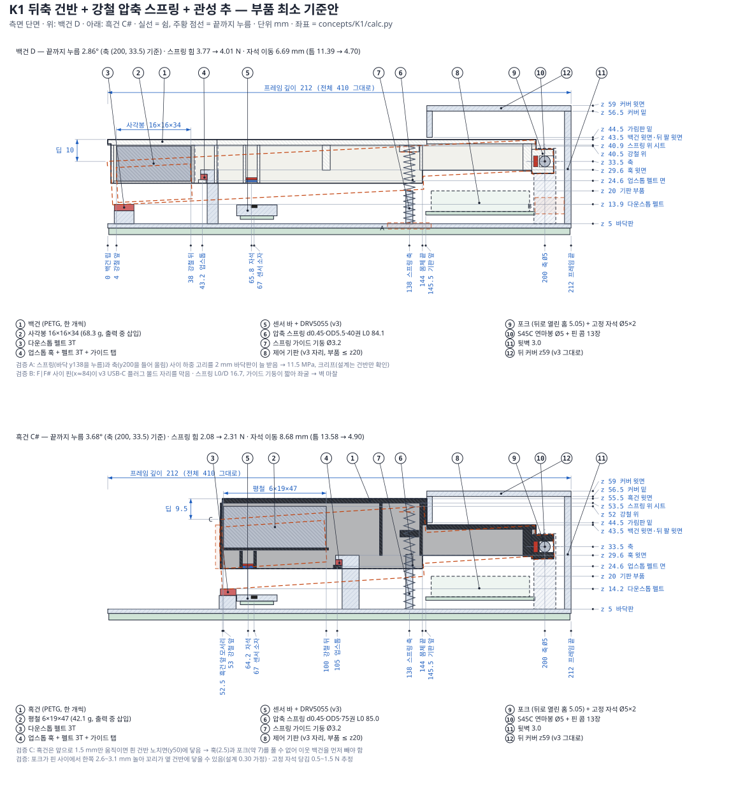</div></figure>
<h3>원리</h3><p>건반 뒤끝의 포크(y194~204, 뒤로 열린 홈 5.05 mm)가 옥타브당 1개인 Ø5 S45C 연마봉(y200, z33.5)에 걸려 돕니다. 포크 끝의 Ø5×2 자석이 봉을 당겨 앉힙니다. 프레임 바닥(z5)의 가이드 기둥에서 올라온 피아노선 압축 스프링이 건반 꼬리 속(y138)을 밀어 올립니다(백 d0.45·OD5.5·40권, 흑 OD5·75권). 백건 머리 속에는 16×16×34 사각봉(68.3 g), 흑건 앞쪽 속에는 6×19×47 평철(42.1 g)을 출력 도중에 넣어 완전히 가둡니다. 스프링 예압이 건반과 추의 무게를 함께 들어 올리므로, 누르기 시작하는 힘은 50 g이고 손끝에는 추의 관성만 남습니다. 쉼 높이는 새 위치의 훅(백 y42.5~45.5) 펠트가, 바닥은 앞 펠트가 정합니다. 커버 z59, 깊이 212 mm, v3 제어 기판 자리는 그대로입니다.</p>
<div class="cols"><div><h3>좋은 점</h3><ul class="proslist"><li>레버 1개와 스프링 1개로 부품이 가장 적고, 커버 z59와 깊이 212 mm를 지키는 가장 작은 안입니다.</li><li>앞/뒤 힘 비가 1.70으로 좋습니다.</li><li>연결부가 없어서 &#x27;덜걱&#x27; 소리의 원인이 없습니다.</li><li>필라멘트가 3.9 kg / 260 h로 가장 적습니다.</li><li>관성 m_eff가 백건 65 g입니다. 머리 속 추를 60 mm로 늘리면 약 94 g까지 가능합니다(앞 업스톱 자리와 겹치는 문제는 있음).</li></ul></div>
<div><h3>아쉬운 점</h3><ul class="proslist"><li>되돌리는 힘을 무게가 아니라 긴 스프링이 전부 냅니다. 사용자의 1순위(중력 복귀)와 다릅니다.</li><li>바닥으로 갈수록 힘이 오르고(백 50 → 59 g, 흑 50 → 61 g), UW 44 g라 튀는 느낌이 납니다.</li><li>흑건 관성이 37 g로 백건의 0.57배입니다.</li><li>맞춤 스프링 때문에 가장 비쌉니다(+13.8만 원, 가격 미확인). 스프링 하중 공차 ±10 %가 손끝에서 ±12.7 g가 됩니다.</li><li>흑건은 이웃 백건을 먼저 빼야 뺄 수 있습니다.</li></ul></div></div>
<h3>수치 (독립 검증값)</h3><div class="tbl "><table><thead><tr><th>항목</th><th>검증값</th></tr></thead><tbody><tr><td>다운웨이트 DW (백 y13 / 흑 y62.5)</td><td>백 50.0 g / 흑 50.2 g (바닥에서 58.8 / 61.4 g)</td></tr><tr><td>업웨이트 UW</td><td>백 43.5 g / 흑 44.6 g (마찰 3.2 g)</td></tr><tr><td>유효 질량 m_eff</td><td>앞끝 백 65.2 g / 흑 37.2 g (손가락 점 74.5 / 42.8 g)</td></tr><tr><td>연타 (150 gf로 다시 누름)</td><td>최적 타이밍 백 15.3 / 흑 21.0 Hz, 재무장 순간에 누르면 12.6 / 17.0 Hz (설계 주장 17.3 / 23.9)</td></tr><tr><td>완전 복귀 (40 % 복귀까지)</td><td>백 51.3 ms (33.2) / 흑 36.1 ms (23.7)</td></tr><tr><td>앞/뒤 힘 비 F(y90)/F(y13)</td><td>1.70</td></tr><tr><td>쉼 상태 플라스틱 최대 응력</td><td>프레임 바닥 11.5 MPa (스프링 ↔ 축 하중 고리), 건반 1.23 MPa (단차에서 2~2.5)</td></tr><tr><td>뒤 커버 높이</td><td>z59 (그대로)</td></tr><tr><td>깊이 (프레임 / 전체)</td><td>212 / 410 mm (그대로)</td></tr><tr><td>강철</td><td>옥타브 714 g / 88건반 5.27 kg, 모듈 1.28 kg</td></tr><tr><td>자석 이동 / 바닥 간격</td><td>백 6.69 / 흑 8.68 mm, 4.70 / 4.90 mm</td></tr><tr><td>움직이는 부품 최소 틈</td><td>0.67 mm (가이드 리브 ↔ 이웃 흑건 앞면), 포크가 놀면 접촉 가능</td></tr><tr><td>필라멘트 / 출력 시간 (88건반)</td><td>3.89 kg / 260 h</td></tr><tr><td>비용 증감 (v3 대비)</td><td>+138,191원 (스프링·절단 가격 미확인)</td></tr></tbody></table></div>
<h3>검증에서 나온 문제</h3><ul class="proslist"><li>&#x27;크리프 없음&#x27; 주장이 프레임을 빠뜨렸습니다. 스프링은 바닥(y138)을 누르고 축(y200)은 위로 들리므로, 모듈마다 1,257 N·mm의 모멘트가 2 mm 바닥판에 늘 걸립니다. 응력은 약 11.5 MPa이고, 핀 줄이 약 7.5 mm 들릴 수 있습니다. 세로 웹 6장(2×20)을 넣으면 0.73 MPa로 내려갑니다.</li><li>연타 수치가 과대평가됐습니다. 40 % 지점에서 건반은 아직 0.24(백)/0.32(흑) m/s로 올라가는 중인데, 계산은 정지 상태에서 다시 누른다고 가정했습니다. 바로잡으면 150 gf에서 15.3 / 21.0 Hz(최적 타이밍), 재무장 순간에 누르면 12.6 / 17.0 Hz입니다. 백건은 13.3 Hz에 못 미칠 수 있습니다.</li><li>스프링이 가늘고 깁니다(L0/D 16.7 / 18.7). 좌굴이 시작되는 변형은 3.5 / 2.8 mm로 작동 변형보다 훨씬 작습니다. 가이드 기둥이 17.9 / 20.5 mm 구간을 안내하지 못해 코일이 건반 벽 쪽으로 휘어 닿습니다(마찰·긁힘).</li><li>포크와 핀 치수가 맞지 않습니다. 포크가 핀 사이에서 한쪽으로 2.6~3.1 mm 놀아서(설계 가정 0.30 mm) 꼬리가 옆 흑건에 닿을 수 있습니다. F|F# 사이 핀이 v3 USB-C 플러그 자리를 막습니다.</li><li>분리 절차가 틀렸습니다. 백건은 3.5 mm가 아니라 약 7 mm 밀어야 합니다. 흑건은 1.5 mm만 앞으로 가도 흰 건반 노치면에 닿아 혼자 뺄 수 없습니다. 앞쪽 멈춤이 자석 하나(실제 0.5~1.5 N 추정)뿐이라, 건반이 2.5 mm 밀리면 스프링이 건반 앞을 튕겨 올립니다.</li><li>흑건 뒤 팔은 출력할 때 서포트가 필요하고, 1 mm 미만 틈(0.67 mm)이 있습니다. 와셔 조정값도 문서와 계산이 다릅니다(0.5 mm당 1.72 g → 실제 1.32 g).</li></ul>
<h3>고르지 않은 이유</h3><p>3위(6.08점)입니다. 건반당 레버 1개와 스프링 1개로 커버 z59·깊이 212 mm를 지키는 가장 작은 안이고, 앞/뒤 비 1.7도 좋습니다. 그러나 복귀 힘을 무게가 아니라 긴 압축 스프링이 전부 내서 사용자의 1순위(중력 복귀)와 다릅니다. 힘 곡선이 50 → 59/62 g로 스프링처럼 오르고, UW 44 g는 튀는 느낌을 주며, 흑건 관성은 백건의 0.57배입니다. 검증에서는 프레임 바닥 11.5 MPa 크리프, 스프링 좌굴, 포크·핀 치수 불일치, USB 간섭, 흑건 단독 분리 불가가 나왔습니다. 맞춤 스프링 때문에 비용도 가장 큽니다(+13.8만 원, 미확인).</p>
</section><section class="page" id="p-f1" hidden>
<p class="eyebrow">대안 · 심사 점수 5.78</p>
<h2>F1 오버테일 카운터레버 (뒤축 건반 + 꼬리 위 무게 레버)</h2>
<p class="lede">건반은 맨 뒤(y205) 축으로 돌고, 이름판 커버 밑 빈 공간의 무게 레버가 코로 건반 윗판을 밀어 올립니다. 느낌 숫자가 가장 좋은 안입니다.</p>
<figure class="sheet"><div class="cap"><span><b>F1 측면 단면</b></span><a class="mono" href="alt/F1_side.svg" target="_blank" rel="noopener">크게 보기 ↗</a></div><div class="dwimg"></div></figure>
<h3>원리</h3><p>건반은 뒤끝 C훅이 Ø3 강철봉(y205, z18)에 걸려 도는 강체입니다. 보이는 부분 바로 뒤(y151~196), 이름판 커버 밑에 건반마다 무게 레버가 하나씩 있습니다. 레버는 Ø3 봉(y151, z35.8)에서 돌고, 짧은 앞 코(R2)가 건반 속으로 들어가 윗판 밑 부싱 천 0.6T를 아래에서 밉니다. 뒤쪽 캐리어에는 평철 9×25가 실립니다(백 40 mm 70.6 g, 흑 37 mm 65.4 g). 누르면 코가 눌려 평철 중심이 약 7.3 mm 오르고, 손을 떼면 평철이 떨어지면서 건반을 v3 훅까지 밀어 올립니다. 레버 뒤 탭은 뒤 빗 블록 포켓 안에서 위 펠트(과회전 멈춤)와 가드 펠트(복귀 착지) 사이를 움직입니다. 건반 몸통 밑의 얇은 PETG 용골이 추 밑을 지나 뒤 축까지 이어집니다. 제어 기판은 y82~132로 옮깁니다. 건반 높이, 딥, 커버 z59, 깊이 212 mm는 그대로입니다.</p>
<div class="cols"><div><h3>좋은 점</h3><ul class="proslist"><li>느낌 숫자가 가장 좋습니다. 앞/뒤 비 1.67, m_eff 71 / 67 g로 백·흑이 고릅니다.</li><li>연타는 다시 누르는 시간까지 넣어 약 21 Hz, 완전 복귀는 58 / 56 ms입니다.</li><li>복귀 힘의 100 %가 중력이고 스프링이 없습니다.</li><li>건반 높이 z43.5, 딥 10 / 9.5, 커버 z59, 깊이 212 mm를 지킵니다.</li><li>건반과 레버는 무게로 눌린 한쪽 접촉이라 평소 유격이 0입니다.</li></ul></div>
<div><h3>아쉬운 점</h3><ul class="proslist"><li>추 밑을 지나는 가는 PETG 용골이 사실상 스프링입니다(0.25 mm/N). 세게 칠 때마다 17~37 MPa를 받아 강철 보강이 필요합니다.</li><li>흑건 레버 뒤 탭이 35~48 MPa를 받아 PETG 강도 51 MPa에 가깝습니다.</li><li>제어 기판을 옮겨 저높이로 다시 만들어야 하는데, 그림대로는 USB 경로가 없습니다.</li><li>건반 하나를 빼려면 레버 세트(약 840 g)부터 들어내야 합니다.</li><li>고칠 것(강철 용골, 핀, 스톱 보강)을 모두 넣으면 부품 수가 가장 많아집니다.</li></ul></div></div>
<h3>수치 (독립 검증값)</h3><div class="tbl "><table><thead><tr><th>항목</th><th>검증값</th></tr></thead><tbody><tr><td>다운웨이트 DW (백 y13 / 흑 y62.5)</td><td>백 53.5 g / 흑 49.5 g (축 μ 0.3 이상이면 약 57 g)</td></tr><tr><td>업웨이트 UW</td><td>백 38.2 g / 흑 38.7 g (마찰 7.7 g)</td></tr><tr><td>유효 질량 m_eff (행정 중간)</td><td>백 71.4 g / 흑 67.3 g</td></tr><tr><td>연타 (40 % 복귀 + 다시 누름)</td><td>백 20.6 Hz / 흑 21.4 Hz (설계 주장 1/t40 = 27.6 / 28.5)</td></tr><tr><td>완전 복귀 (40 % 복귀까지)</td><td>백 57.7 ms (36.1) / 흑 55.7 ms (35.0)</td></tr><tr><td>앞/뒤 힘 비 F(y90)/F(y13)</td><td>1.67 (흑 y90/y62.5 1.24)</td></tr><tr><td>쉼 상태 플라스틱 최대 응력</td><td>1.46 MPa (쉼, 용골 y149). 타건 중 용골 6.5~17 MPa (강체 하중이면 최대 37)</td></tr><tr><td>뒤 커버 높이</td><td>z59 그대로 (y150~200만 윗판 1.5T, 밑면 z57.5), 레버 최고점 z56.4 (ff)</td></tr><tr><td>깊이 (프레임 / 전체)</td><td>212 / 410 mm (그대로)</td></tr><tr><td>강철</td><td>옥타브 821 g / 88건반 6.03 kg, 모듈 약 1.45 kg</td></tr><tr><td>자석 이동 / 바닥 간격</td><td>백 6.78 / 흑 8.72 mm, 4.04 / 4.63 mm (기계적 틈 3.01)</td></tr><tr><td>움직이는 부품 최소 틈</td><td>0 mm (용골 ↔ 캐리어, 휨 포함 시 접촉), 흑건 앞 ↔ 흰 노치 0.36 mm</td></tr><tr><td>필라멘트 / 출력 시간 (악기 전체)</td><td>5.25 kg / 350 h</td></tr><tr><td>비용 증감 (v3 대비)</td><td>+80,200원 (검증: 수정 포함 +3~6만 원 더)</td></tr></tbody></table></div>
<h3>검증에서 나온 문제</h3><ul class="proslist"><li>(치명) 용골을 강체로 계산했지만 실제로는 스프링입니다(끝 처짐 0.252 mm/N). 무거운 레버를 가속하는 동안 축이 손가락 힘의 약 2배를 받아, 0.3/0.6/1.0 m/s로 치면 뒤가 1.2/2.2/3.2 mm 휘고 용골 응력은 6.5~17 MPa(강체 하중이면 37 MPa)입니다. 3×6 강철 띠 같은 보강이 필요합니다.</li><li>용골 ↔ 레버 캐리어 틈을 쉼 상태에서만 확인했습니다. 복귀 착지 자세(레버는 가드, 건반은 업스톱 펠트)에서 0.37(백)/0.16(흑) mm이고, 용골 휨을 넣으면 닿습니다. 매 음마다 딸깍 소리나 마찰이 생깁니다.</li><li>레버 뒤 탭(5×4)이 ff 과회전 충격을 전부 받아 백 15~34 MPa, 흑 35~48 MPa입니다. 같은 감속 때문에 평철이 윗면 열린 캐리어에서 40~97 N으로 당겨지는데, 고정은 압입과 CA 한 방울뿐입니다.</li><li>&#x27;레버 봉이 늘 아래로 눌린다&#x27;는 주장이 틀렸습니다. 탭이 레버의 타격 중심 밖에 있어서 반력이 뒤집히고, ff마다 봉이 14~38 N으로 J-슬롯에서 들립니다(봉 위 재료는 0.67 mm뿐).</li><li>흑건 앞면 ↔ 흰 건반 노치면 틈이 0.36 mm(ff 0.18)로 1 mm 규칙에 못 미칩니다. 노치 모따기 2.5는 효과가 없습니다.</li><li>옮긴 제어 기판의 USB-C 플러그가 핀 판·용골과 겹치고, 새 뒤 빗 블록이 v3 USB 터널을 막습니다. 케이블 경로가 없습니다.</li><li>연타 지표가 다시 누르는 시간을 빼서 약 30 % 과대였습니다(27.6 → 20.6 Hz). 그래도 13.3 Hz는 넘습니다.</li></ul>
<h3>고르지 않은 이유</h3><p>4위(5.78점)입니다. 느낌 숫자는 가장 좋습니다(앞/뒤 비 1.67, m_eff 71/67 g, 약 21 Hz, 완전 복귀 58 ms, 커버 z59). 그러나 무게 레버 밑을 지나는 가는 PETG 용골이 실제로는 스프링이라 세게 칠 때마다 17~37 MPa(치명)를 받고, 흑건 뒤 탭은 35~48 MPa로 PETG 강도에 가깝습니다. 복귀 때 용골이 레버와 닿고, 레버 봉이 J-슬롯에서 들리며, 흑건 앞 틈은 0.36 mm입니다. 제어 기판을 옮겨 저높이로 다시 만들어야 하는데 USB 경로가 없고, 건반 하나를 빼려면 레버 세트를 먼저 들어내야 합니다. 강철 용골 보강까지 넣으면 부품이 가장 많아져 내구성·단순성·위험 점수가 낮았습니다.</p>
</section></main>
<footer><div class="wrap">모든 수치는 좌표 모델(model_v4.py)과 독립 검증 스크립트에서 나왔습니다. 가격은 표시한 곳만 판매처 확인가이고 나머지는 추정입니다. 참고 자료: <a href="https://darkpgmr.tistory.com/187" target="_blank" rel="noopener">카시오 PX-720 건반 구조 글</a>.</div></footer>
<script>
(function(){
  const pages=[...document.querySelectorAll('.page')];
  const links=[...document.querySelectorAll('nav.tabs a')];
  function show(){
    let raw=(location.hash||'#overview').slice(1);
    let id=raw.toLowerCase(), anchor=null;
    if(!document.getElementById('p-'+id)){
      const el=document.getElementById(raw);
      const pg=el&&el.closest('.page');
      if(pg){id=pg.id.slice(2);anchor=el}else id='overview';
    }
    pages.forEach(p=>{p.hidden=(p.id!=='p-'+id)});
    links.forEach(a=>{ if(a.dataset.to===id) a.setAttribute('aria-current','page'); else a.removeAttribute('aria-current'); });
    const cur=links.find(a=>a.dataset.to===id); if(cur&&cur.scrollIntoView) cur.scrollIntoView({block:'nearest',inline:'nearest'});
    if(anchor) anchor.scrollIntoView(); else window.scrollTo(0,0);
  }
  window.addEventListener('hashchange',show);
  show();
})();
</script>
